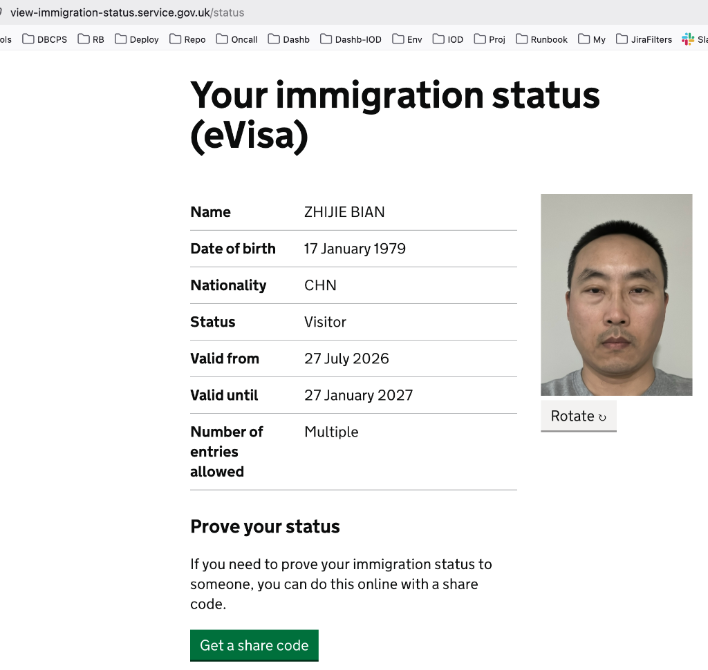

Gemini Answer
- Question
- Answer
- 伦敦与爱丁堡家庭游详细行程与避坑指南 (London & Edinburgh Family Travel Plan)
- 一、 行程总览与关键预订信息 (Trip Overview & Booking Details)
- 二、 逐日详细行程安排 (Daily Itinerary - 包含门票状态)
- Day 1: 8月2日 (周日) — 西雅图启程 (Seattle to London)
- Day 2: 8月3日 (周一) — 抵达伦敦与泰晤士河畔初体验
- Day 3: 8月4日 (周二) — 剑桥大学一日游 (Cambridge Day Trip)
- Day 4: 8月5日 (周三) — 白金汉宫换岗仪式与大本钟/西敏寺
- Day 5: 8月6日 (周四) — 大英博物馆与西区人文风情
- Day 6: 8月7日 (周五) — 哈利波特片场魔法之旅 (Harry Potter Studio Tour)
- Day 7: 8月8日 (周六) — 博罗美食集市、巴宝莉工厂店 (Burberry Outlet) 与格林威治
- Day 8: 8月9日 (周日) — V&A 博物馆、自然历史博物馆与海德公园漫步
- Day 9: 8月10日 (周一) — 沿海景观火车前往爱丁堡与卡尔顿山
- Day 10: 8月11日 (周二) — 爱丁堡城堡与中世纪古城深度游
- Day 11: 8月12日 (周三) — 告别苏格兰，返程西雅图 (EDI -> AMS -> SEA)
- 三、 关键项目注意事项、Tips 与避坑指南 (Tips & Pitfalls)
- 四、 景点门票与收费项目全清单 (Tickets & Admission Master Checklist)
- 五、 行程行李方案对比与建议 (Luggage Plan & Recommendations)
- 六、 8/10 LNER 火车行李规定与存放指南 (LNER Train Luggage Policy & Storage)
- 附录一：EDI → AMS (DL 9586 / KLM) 航班选座指南 (Seat Selection Guide)
- 附录二：英国电子签证 (eVisa) 出入境凭证准备指南 (UK eVisa & Entry Documents Guide)
- 附录三：伦敦公共交通系统 (TfL) 全景新手指南 (London Transport Guide)
- 附录四：13岁女儿伦敦乘车与半价折扣 (Young Visitor Discount) 专属指南
- 💡 方案对比与总结建议
- 附录五：VisitLondon 官方伦敦景点地图与路线指南 (VisitLondon Tourist Attractions Map & Routes Guide)
- 附录六：英国用电与 MacBook / iPhone 充电实操指南 (UK Voltage & Plug Adapter Guide)
- 附录七：随身证件与纸质打印材料全清单 (Essential Identity Documents & Printed Materials Checklist)
- 附录八：哈利波特片场 VIP 门票 PDF (20页) 条形码分类与现场核销指南 (Harry Potter 20-Page Ticket PDF Barcode Breakdown)
- 附录九：Tower Suites 酒店出发 — 周边中餐厅 Google Maps 点对点导航与全量精准校正 (Appendix 9: Calibrated Point-to-Point Navigation)
- 附录十：Tower Suites 酒店出发 — 周边超市精准距离与 Google Maps 导航 (Appendix 10: Calibrated Supermarkets Guide)
- 附录十一：白金汉宫换岗仪式全景观赏与防坑终极指南 (Appendix 11: Buckingham Palace Changing of the Guard Master Guide)
- 附录十二：Tower Bridge 夜景专属观赏、晚餐与散步全攻略 (Appendix 12: Tower Bridge Night Walk & Dinner Guide)
Question
8/2 - 8/12 英国伦敦与爱丁堡11天家庭深度游全景路线规划
Answer
8/2 - 8/12 英国伦敦与爱丁堡11天家庭深度游全景路线与指南
伦敦与爱丁堡家庭游详细行程与避坑指南 (London & Edinburgh Family Travel Plan)
一、 行程总览与关键预订信息 (Trip Overview & Booking Details)
1. 基础旅行信息 (Basic Travel Details)
| 项目 (Item) | 详细信息 (Details) |
|---|---|
| 出行成员 (Travelers) | RONG XIAN, Zhijie Bian, Tingyu Bian, Nathan Bian (家庭出游 4 人) |
| 出行时间 (Date Range) | 2026年8月2日 – 8月12日 (共 11 天 10 晚) |
2. 航班预订明细 (Flight Bookings - Delta 确认号 HWF9EJ)
| 航段 (Leg) | 航班号 (Flight) | 起飞时间 (Departure) | 到达时间 (Arrival) | 途经/中转 (Route / Layover) | 机型/舱位 (Aircraft / Class) |
|---|---|---|---|---|---|
| 去程 (Outbound) | DL 20 | 8/2 09:55 PM (SEA) | 8/3 03:35 PM (LHR) | SEA → LHR 直飞 (9h 40m) | Airbus A330-900neo (Classic V) |
| 回程第一程 | DL 9586 (KLM) | 8/12 11:10 AM (EDI) | 8/12 01:40 PM (AMS) | EDI → AMS (阿姆斯特丹中转 1h 30m) | Airbus A321neo |
| 回程第二程 | DL 145 | 8/12 02:40 PM (AMS) | 8/12 04:27 PM (SEA) | AMS → SEA 直飞 (10h 47m) | Airbus A330-900neo |
3. 酒店住宿明细 (Hotel Accommodations)
| 城市 (City) | 入住日期 (Dates) | 酒店名称 (Hotel) | 确认号 (Conf #) | 房型 (Room Type) | 酒店地址 (Address) |
|---|---|---|---|---|---|
| 伦敦 (London) | 8/3 – 8/10 (7晚) | Tower Suites by Blue Orchid | 2474409110 | Executive Suite (1 King + 1 Double Sofa bed) | 100 Minories, London EC3N 1JY, GB |
| 爱丁堡 (Edinburgh) | 8/10 – 8/12 (2晚) | Holiday Inn Edinburgh by IHG | 2474434176 | Standard Room (2 Double Beds) | 132 Corstorphine Road, Edinburgh EH12 6UA, GB |
4. 火车票预订明细 (Train Bookings)
| 日期 (Date) | 火车公司 (Operator) | 出发站/时间 (Departure) | 到达站/时间 (Arrival) | 车厢与座位 (Coach & Seats) | 耗时 (Duration) |
|---|---|---|---|---|---|
| * 去程车次 (Outbound): 09:54 AM (London Liverpool Street) → 11:07 AM (Cambridge), 车程 1 小时 13 分钟 | |||||
| 8月10日 (周一) | LNER | London Kings Cross (09:30 AM) | Edinburgh Waverley (13:38 PM) | Coach J, Seats 71, 74, 73, 72 (👉 🚆 LNER 官方车票管理) (👉 🎟️ 打开合并分类版 LNER 沿海火车载入 PDF (LNER-Edin-eTicket-Merged-Categorized.pdf)) | 4小时 08分钟 |


二、 逐日详细行程安排 (Daily Itinerary - 包含门票状态)
(注：下文中每个项目前均已标注门票状态：🎟️ 需提前付费购票 | 🎫 免费但须提前预约 | 🆓 免费开放/免费外景)
Day 1: 8月2日 (周日) — 西雅图启程 (Seattle to London)
- 21:55: 从西雅图塔科马国际机场 (SEA) 乘坐达美航空 DL 20 航班直飞伦敦希思罗机场 (LHR)。夜航休息，准备开启英伦之旅。
Day 2: 8月3日 (周一) — 抵达伦敦与泰晤士河畔初体验
👉 🗺️ 点击打开 Day 2 机场至酒店 Google Maps 导航路线
👉 🗺️ 点击打开 Tower Suites 酒店周边 2 小时晚宴与夜景散步 Google Maps 导航路线
-
15:35: 顺利抵达伦敦希思罗机场 (LHR) Terminal 3/4，办理入境与提取行李。
-
16:30 – 17:30: 乘车前往伦敦市中心酒店（推荐乘坐舒适性价比最高的 UberX 或伊丽莎白线紫线）：
- 🚗 希思罗机场 (LHR T3) 至酒店 (Tower Suites) 交通指南:
- UberX 费用估计 (推荐 🌟🌟🌟🌟🌟): 平峰 约 £45 – £55 英镑 (约 $58 – $70 USD) / 晚高峰 约 £55 – £70 英镑 (约 $70 – $90 USD)，耗时 50–70 分钟，包含 £5 机场接车费。
- 容量与行李说明: 对于全家选择的【方案 B：1 大托运箱 + 2 登机箱 + 4 人】，常规 UberX (如 Toyota Prius / Hyundai Ioniq) 的后备箱能够完美容纳 1 大箱 + 2 登机箱，无需额外多花钱叫 Uber XL 商务车！
- 3 种交通工具对比 (全家 4 人):
- UberX (标准网约车专车): 约 £45 – £70 | 50–70分钟 | 点对点直达酒店大堂，有行李最轻松省心，费用比 XL 省 £25-35 (★★★★★ 最推荐)
- Elizabeth Line (伊丽莎白线紫线): £55.20 (4人高峰) | 50分钟 | 空调快轨不堵车，直达 Liverpool Street 站 (★★★★☆ 性价比极高)
- Uber XL (大容量商务车): 约 £70 – £110 | 50–70分钟 | 6座大车，若临时增加箱子可作为备选 (★★★☆☆)
- LHR T3 乘坐 Uber 上车 Tips:
- 取完托运行李后: 跟随机场标牌指向 "Short Stay Car Park / Ground Transportation"。
- 乘坐电梯到达: Terminal 3 Car Park 3 楼 (Level 3) 的 Rideshare Pick-up Area (网约车接客专区)。
- 走到 3 楼接客区后: 再打开 App 叫车，UberX 司机 5–8 分钟即可到达。
- 🚗 希思罗机场 (LHR T3) 至酒店 (Tower Suites) 交通指南:
-
17:30: 入住 Tower Suites by Blue Orchid (100 Minories) 办理 Check-in 整理休息。
-
18:30 – 20:00: 🍽️ 晚餐推荐 (酒店/塔桥周边中餐与亲民美食):
- 🥇 中餐家庭榜首 (最推荐 🌟🌟🌟🌟🌟): Kirin (麒麟中餐厅) (正宗粤菜/点心，环境优雅高端，口味最均衡，人均 £22–35)。
- 🥈 中餐性价比榜首 (家庭炒菜 🌟🌟🌟🌟🌟): Crystal China (水晶宫) (性价比极高，极适合全家吃家常炒菜与热菜，人均 £18–28)。
- 🥢 中餐简餐推荐: Three Uncles (三叔烧腊 Tower Hill) (步行2分钟，港式蜜汁叉烧与深井烧鸭饭，人均 £12–16)。
- 🍽️ 西式推荐 1: Flat Iron (伦敦超人气平价牛排，招牌羽翼牛排 + 赠茶饮冰淇淋，人均 £16–22)。
- 🍽️ 西式推荐 2: Bodean's BBQ Tower Hill (美式木炭烤猪排与多汁汉堡，人均 £18–25)。
-
19:40 – 21:40: 🚶 Tower Suites 酒店周边 2 小时精致晚宴与夜景漫步 Plan:
- 📋 2小时时间表与步行路线 (👉 🗺️ 点击打开 2小时晚宴与散步 Google Maps 导航):
- 19:40 – 19:50: 从酒店步行 6 分钟穿过 Tower Hill 步入 St Katharine Docks (圣凯瑟琳水上游艇码头)。
- 19:50 – 20:50: 码头/周边优质晚宴 (推荐 3 个不同风格选择):
- 🍝 西式推荐 1 (手工意面): Emilia's Crafted Pasta (St Katharine Docks) (运河水岸极富氛围感，招牌慢炖牛腩面，人均 £18–25)。
- 🍺 西式推荐 2 (百年木构酒吧): The Dickens Inn (18世纪三层鲜花木质酒馆，传统炸鱼薯条与烤肉派，人均 £15–25)。
- 🥢 中餐单独推荐 (正宗川菜): 三叔烧腊 Three Uncles / 川妹子 Chuan Chinese Restaurant (近 Minories 街，家常热菜与烧腊，人均 £16–28)。
- 20:50 – 21:30: 登上 🆓 Tower Bridge (伦敦塔桥) 人行步道观赏夜景 → 到达南岸 More London Riverside 拍摄亮灯塔桥全景与 The Shard (碎片大厦) → 经由 Tower of London (伦敦塔古堡城墙) 步道折返。
- 21:30 – 21:40: 从伦敦塔步道步行 6 分钟悠返酒店休憩。
- 📋 2小时时间表与步行路线 (👉 🗺️ 点击打开 2小时晚宴与散步 Google Maps 导航):
Day 3: 8月4日 (周二) — 剑桥大学一日游 (Cambridge Day Trip)
👉 🗺️ 点击打开 Day 3 Google Maps 全程导航路线
-
09:00 – 09:54: 从酒店 (Hotel / Tower Suites) 地面轻松步行 8 分钟（或打 UberX 3 分钟 £6）直达 Liverpool Street 车站 大厅（免进地下地铁，无上下楼梯）。
-
09:54 – 11:07: 🎟️ 【已预订出票】乘坐 Greater Anglia 火车前往剑桥 (Cambridge):
- 📋 电子车票凭证信息 (e-Ticket Details):
- 预订编号 (Reservation No.):
483369347844(👉 🎟️ Trainline 车票预订与管理入口) - 去程车次 (Outbound): 09:54 AM (London Liverpool Street) → 11:07 AM (Cambridge), 车程 1 小时 13 分钟
- 出行人数: 4 人 (3 成人 + 1 儿童, 包含团购票 Group Ticket, 全员必须同行出入站)
- 电子车票唯一票号 (e-Ticket Unique IDs):
- 成人 1:
TTBY78H9TVN| 成人 2:TTBY78H9TVP| 成人 3:TTBY78H9TVQ| 儿童 1:TTBY78H9TVR
- 成人 1:
- 检票提示: 进出站直接出示手机电子票 (e-Ticket QR Code) 或打印件出示给闸机/站务员过闸。
- 预订编号 (Reservation No.):
- 📋 电子车票凭证信息 (e-Ticket Details):
-
11:15 – 11:30: 剑桥火车站 (Cambridge Railway Station) 出站，在车站门前打车 6 分钟（£7-9）或乘坐 U路 (Universal Bus) 8 分钟直达市中心国王学院 (King's College)。
-
11:30 – 12:45: 游览剑桥核心学院区 (Cambridge University Colleges)：
- 🎟️ 【已预订出票】国王学院礼拜堂与徐志摩诗碑 (King's College Chapel & Grounds):
- 📋 门票预订凭证信息 (e-Ticket Details):
- 订单确认号 (Order No.):
#80629261(👉 🏛️ 国王学院官方网站) - 参观日期 (Date): 2026年8月4日 (周二)
- 指定入场时间段 (Entry Time Slot): 12:00 PM – 12:15 PM (请务必在 12:00 PM 到达入口)
- 指定进场入口 (Entrance): Clare Gate Entrance (位于 Trinity Lane 巷内，请注意勿走主门!)
- 设施提示: 礼拜堂及院内无公共洗手间，请在入场前在周边做好准备。
- 官方商店优惠: 线上商店享 10% 折扣 (折扣码:
CHAPEL10)。
- 订单确认号 (Order No.):
- 核心打卡亮点: 参观哥特式扇形拱顶礼拜堂、鲁本斯名画《贤士来朝》，以及后花园草坪旁的徐志摩《再别康桥》诗碑。
- 📋 门票预订凭证信息 (e-Ticket Details):
- 🎟️ 三一学院 (Trinity College & 牛顿苹果树)：外观牛顿苹果树 (Newton's Apple Tree) 与正门门楼。
- 💡 三一学院参访提示与替代方案:
- 无需提前预约: 三一学院不用提前预约，当天经过正门时看看是否开放；若开放可现场决定是否购票入内。
- 若闭馆备用方案: 如果三一学院当天关闭，也不用担心，牛顿苹果树位于大门外可免费观赏，同时可在学院外围、三一街 (Trinity Street)、参议院大楼 (Senate House) 和国王学院一带漫步游览，体验依然极佳。（👉 🏛️ 三一学院官方参访入口 (Trinity College Visiting)）
- 💡 三一学院参访提示与替代方案:
- 🎟️ 【已预订出票】国王学院礼拜堂与徐志摩诗碑 (King's College Chapel & Grounds):
-
12:45 – 13:45: 🍽️ 剑桥小镇午餐推荐:
- 🍽️ 西式推荐 1: The Eagle Pub (鹰酒吧) (二战飞行员涂鸦与 DNA 发现地，传统炸鱼薯条与牛肉派，人均 £15–20)。
- 🍽️ 西式推荐 2: Fitzbillies (百年老字号，著名肉桂卷 Cinnamon Buns 与英式简餐，人均 £12–18)。
- 🥢 中餐单独推荐: Seven Days (七天中餐厅 Cambridge) (剑桥老牌正宗川菜与北方拉面，人均 £15–22)。
- 餐后漫步前往撑船码头。
-
14:00 – 15:00: 🎟️ 【已预订确认】康河撑船泛舟 (Cambridge Punt Company Shared Tour):
- 📋 预订凭证信息 (Booking Details):
- 确认号 (Ref):
5456(👉 🛶 Scudamore's 官方入口) - 体验时间: 14:00 PM (请务必在 13:50 PM 前到达集合点 Check-in，船只准点出发)
- 出行人数与金额: 4 人 | 已付总金额: £70.00
- 集合地点 (Meeting Point): Cambridge Punt Company 码头服务台 (位于 Byron's Bear Pub 旁, 邮编 CB5 8AG, What3Words:
///skip.year.glory) - 现场紧急联系电话: +44 7943 820437 / +44 7861 182269 / +44 7903 536454
- 确认号 (Ref):
- 📋 预订凭证信息 (Booking Details):
-
15:00 – 16:45: 游览 🎟️ 圣约翰学院 (St John's College) 与近距离观赏 叹息桥 (Bridge of Sighs)。【需购票参观 (成人约 £13-15)】（👉 🏛️ 圣约翰学院官方购票入口 (St John's College Tickets)）。
-
16:45 – 18:25: 🚇 从剑桥返程伦敦市中心酒店 (分步详细乘车指南):
- 📋 返程路线分步指南 (总耗时约 1h 40m)（👉 📍 点击打开剑桥返程酒店 Google Maps 全程导航）:
- 16:45 – 17:00 (前往剑桥火车站): 从圣约翰学院 / 市中心乘坐 U路 (Universal Bus) 或 Bus 1/3 8分钟 (£2/人) 直达 Cambridge 火车站；或打 Uber/Taxi (6分钟 £7-9)。
- 17:00 – 18:13 (乘坐火车返程): 凭已购买的 Greater Anglia 电子往返票 (预订号
483369347844) 扫码进站，乘坐 17:00 发车的 Greater Anglia 直达列车前往 London Liverpool Street 车站 (18:13 抵达，车程 1 小时 13 分钟)。 - 18:13 – 18:25 (出站步行返回酒店与晚餐推荐):
* 🍽️ 西式推荐 1: Nando's Liverpool Street (全英极受欢迎的葡式烤鸡，性价比极高，人均 £12–16)。
* 🍽️ 西式推荐 2: Patty & Bun (伦敦高品质汉堡与多汁薯条，人均 £15–20)。
* 🥢 中餐单独推荐: My Old Place (老地方中餐厅 Liverpool St) (伦敦城极具名气的东北菜与川菜，人均 £18–25)。: 抵达 Liverpool Street 车站后无须进地下地铁，直接从地面出口沿 Minories 街轻松漫步 8 分钟（或打车 3 分钟 £6）直达 Tower Suites 酒店。
- 📋 返程路线分步指南 (总耗时约 1h 40m)（👉 📍 点击打开剑桥返程酒店 Google Maps 全程导航）:
Day 4: 8月5日 (周三) — 白金汉宫换岗仪式与大本钟/西敏寺
👉 🗺️ 点击打开 Day 4 Google Maps 全程导航路线
-
08:30 – 09:15: 🚇 从酒店 (Tower Suites) 出发前往白金汉宫 (Buckingham Palace 乘车计划):
- 📋 分步乘车指南 (总耗时约 35m)（👉 📍 点击打开白金汉宫 Google Maps 导航）:
- 08:30 – 08:34: 从酒店步行 4 分钟到达 Tower Hill 地铁站。
- 08:34 – 08:50: 搭乘 Circle Line (黄线) 或 District Line (绿线) 7 站 (16 分钟) 直达 St James's Park 站 或 Victoria 站。
- 08:50 – 09:05: 出站穿过 St James's Park 绿地步行 10 分钟于 09:05 AM 抵达维多利亚女王纪念碑 (Victoria Memorial) 阶梯上方占位（提前 55 分钟占据换岗仪式最佳视角）。
- 📋 分步乘车指南 (总耗时约 35m)（👉 📍 点击打开白金汉宫 Google Maps 导航）:
-
09:30 – 11:30: 🆓 Buckingham Palace Changing of the Guard (白金汉宫换岗仪式)。【免费观赏】11:00 准时举行骑兵与皇家卫队交接。
-
12:00 – 13:30: 穿过 🆓 St James's Park (圣詹姆斯公园) 欣赏绿意与天鹅，在 Westminster 附近享用午餐 (推荐平价亲民餐厅)：
- 🍽️ 西式推荐 1: The Red Lion Pub Westminster (经典英式酒吧，牛肉汉堡与炸鱼薯条，人均 £15–20)。
- 🍽️ 西式推荐 2: Regency Café (伦敦最地道黑白复古风英式全套早午餐，人均 £8–12)。
- 🥢 中餐单独推荐: Joy King Lau (皇朝点心) (近 Soho/Chinatown 港式饮茶点心与炒饭，人均 £18–26)。
-
13:30 – 15:30: 🎟️ 【已预订出票】Westminster Abbey (西敏寺大教堂 / 威斯敏斯特教堂):
- 📋 门票预订凭证信息 (e-Ticket Details):
- 确认号 (Confirmation No.):
1228020(订单编号:WSORD-29072026-054523003| 👉 🏛️ 西敏寺官方网站) - 参观日期 (Date): 2026年8月5日 (周三)
- 门票类型: 2 组 "1 Adult + 1 Child 6-17 years" (共 2 成人 + 2 儿童)
- 已付总金额: £54.26 (门票已含多语言语音导览)
- 教堂地址 (Location): 20 Dean's Yard, London, SW1P 3PA
- 确认号 (Confirmation No.):
- 核心打卡亮点: 感受千年来英国皇家加冕仪式举办地，瞻仰牛顿、达尔文、霍金与狄更斯等伟人陵寝。
- 📋 门票预订凭证信息 (e-Ticket Details):
-
15:30 – 17:30: 游览 🆓 Big Ben (大本钟外景)、🆓 Houses of Parliament (英国国会大厦外景) 与 🆓 Westminster Bridge (威斯敏斯特桥)。
-
17:30 – 18:15: 🚇 从威斯敏斯特/大本钟返程酒店乘车指南:
- 📋 分步返程指南 (总耗时约 20m):
- 从大本钟旁直接进入 Westminster 地铁站。
- 搭乘 Circle Line (黄线) 或 District Line (绿线) 5 站 (12 分钟) 零换乘直达 Tower Hill 站酒店。
- 📋 分步返程指南 (总耗时约 20m):
-
18:15 – 19:30: 🎟️ London Eye (伦敦眼摩天轮 - 可选)。【建议提前购票 (约 £38-45/人)】俯瞰伦敦日落全景。
-
19:30 – 20:30: 🍽️ 伦敦眼/Waterloo 附近晚餐推荐:
- 🍽️ 西式推荐 1: Honest Burgers Waterloo (英国本土高品质牛肉汉堡，人均 £14–18)。
- 🍽️ 西式推荐 2: Wahaca Waterloo (墨西哥风味 Taco 轻食，适合全家，人均 £16–22)。
- 🥢 中餐单独推荐: Jen Cafe / Noodle Zone (Waterloo 附近平价手工水饺与牛肉面，人均 £12–16)。
Day 5: 8月6日 (周四) — 大英博物馆与西区人文风情
👉 🗺️ 点击打开 Day 5 Google Maps 全程导航路线
-
08:00 – 08:40: 🚇 从酒店 (Tower Suites) 出发前往大英博物馆 (早高峰乘车计划):
- 📋 分步乘车指南 (总耗时约 30-35m，08:00 出发以防早高峰拥堵，确保 08:40–08:50 前准时到达)（👉 📍 点击打开大英博物馆 Google Maps 导航）:
- 08:00 – 08:04: 从酒店步行 4 分钟到达 Tower Hill 地铁站。
- 08:04 – 08:18: 搭乘 District Line (绿线) 7 站 (14 分钟) 至 Embankment 站。
- 08:18 – 08:28: 换乘 Northern Line (黑线) 3 站至 Tottenham Court Road 站。
- 08:28 – 08:35: 出站沿着 Great Russell Street 步行 5 分钟到达大英博物馆正门 (Main Entrance)，在 08:50 前向工作人员出示电子票。
- 📋 分步乘车指南 (总耗时约 30-35m，08:00 出发以防早高峰拥堵，确保 08:40–08:50 前准时到达)（👉 📍 点击打开大英博物馆 Google Maps 导航）:
-
08:50 – 13:00: 🎟️ The British Museum (大英博物馆) 深度游览。【已预订电子门票 e-Ticket】参观罗塞塔石碑、帕特农神庙雕塑与埃及木乃伊展厅。
- 📧 门票预订凭证 (Ticket Confirmation):
- 入场时间 (Arrival Requirement): 08:50 AM 准时到达正门 (Great Russell Street Main Entrance) 向工作人员出示门票。
- 预订日期 (Order Date): 7/3/2026
- 订单号 (Order Number):
10334783 - 客户编号 (Customer Number):
4834739 - 入场提示: 电子门票（PDF / Smart Phone e-Ticket）已发送至邮箱，请提前准备好手机电子票或打印件在入口处出示。
- 📧 门票预订凭证 (Ticket Confirmation):
-
13:00 – 14:15: 🍽️ 大英博物馆周边午餐（如博物馆内 Great Court Restaurant，或周边法式/英式餐馆烘焙小吃）。
-
14:15 – 16:45: 漫步至 🆓 Covent Garden (考文特花园) 与 🆓 Seven Dials (七晷区)，享受英式下午茶与街头艺术表演。
-
16:45 – 17:30: 🚇 从考文特花园 (Covent Garden) 返程酒店乘车指南:
- 📋 分步返程指南 (总耗时约 25m):
- 漫步至 Covent Garden 站，搭乘 Piccadilly Line (紫线) 2 站至 Holborn 站。
- 换乘 Central Line (红线) 3 站至 Bank 站（或直接叫 UberX 15 分钟 £12-15）轻松直达 Tower Suites 酒店。
- 📋 分步返程指南 (总耗时约 25m):
-
18:00 – 19:15: 🍽️ 西区/中国城晚餐推荐:
- 🍽️ 西式推荐 1: Dishoom Covent Garden (网红孟买风味烤鸡与咖喱，人均 £20–28)。
- 🥢 中餐单独推荐 1: Four Seasons Chinatown (文兴酒家) (伦敦全英第一秘制港式烧鸭饭，人均 £20–28)。
- 🥢 中餐单独推荐 2: CoCo Ichibanya Chinatown (中国城日式咖喱饭与炸猪排饭，人均 £14–18)。
-
19:00 – 21:30: 🎟️ West End Musical (西区音乐剧 - 可选)。【需提前购票】观看经典音乐剧（如《歌剧魅影》或《狮子王》）。
Day 6: 8月7日 (周五) — 哈利波特片场魔法之旅 (Harry Potter Studio Tour)
👉 🗺️ 点击打开 Day 6 Google Maps 全程导航路线
-
06:45 – 08:22: 🚕 从酒店 (Tower Suites) 前往哈利波特片场 (少换乘、少步行尊享推荐方案):
- 🌟 【首选推荐】方案 A：Uber/打车直达 Euston 车站 ➔ 快车 ➔ 片场接驳车 (🌟🌟🌟🌟🌟 最舒适，避开地下走道)
- 06:45 – 07:05 (6:45 到楼下叫车, 6:50 出发直达 Euston): 6:45 到酒店楼下叫车，6:50 准时乘 UberX / Black Cab (约 15 分钟 £12–16) 出发，免除繁重的 Bank 地下通道步行与楼梯，约 07:05 提前送达 London Euston 火车站 正门门口。
- 07:23 – 07:48 (乘坐快车直达): 进站搭乘 West Midlands Trains 快车 14 分钟 直达 Watford Junction 车站。
- 07:55 – 08:15 (片场接驳车): 出站搭乘片场官方接驳巴士 15 分钟 直达哈利波特片场正门，于 08:20 AM 顺利过安检。
- 🌟 【备选公共交通】方案 B：Moorgate 站 Northern Line 直达 Euston 方案 (少换乘)
- 07:00 – 07:06: 从酒店打车 4 分钟 (£6) 或步行至 Moorgate 地铁站。
- 07:08 – 07:18: 乘 Northern Line (黑线) 4 站 (10 分钟) 零换乘直达 Euston 站。
- 07:23 – 08:15: 从 Euston 乘快车 14 分钟至 Watford Junction ➔ 接驳巴士 15 分钟直达片场大门。
- 🌟 【首选推荐】方案 A：Uber/打车直达 Euston 车站 ➔ 快车 ➔ 片场接驳车 (🌟🌟🌟🌟🌟 最舒适，避开地下走道)
-
08:45 – 14:30: 🎟️ 【已预订 VIP 尊享套餐】Breakfast at the Hogwarts Table (霍格沃茨大礼堂早餐 + 片场深度游全景攻略):
- 📋 门票预订凭证信息 (e-Ticket Details):
- 确认号 (Booking Ref):
7316917(👉 ⚡ 哈利波特影城官网) - 日期时间: 2026年8月7日 (周五) | 抵达安检: 08:30 AM
- 已付总金额: £508.00 (全家 4 人尊享 VIP 组合套餐)
- 套餐包含内容 (Package Inclusions):
- 4 人片场入场门票 (Studio Tour Entry)
- 4 人霍格沃茨大礼堂高级早餐 (Breakfast at The Hogwarts Table)
- 4 杯黄油啤酒 (Butterbeer)
- 4 本官方精装纪念指南册 (Souvenir Guidebook)
- 确认号 (Booking Ref):
- 📋 VIP 早餐与游览详细时间轴 (Detailed Timeline):
- 08:30 AM (到达与凭票安检): 全家抵达影城大门安检，凭 PDF 门票（第 1–8 页）扫码入场，经 VIP 通道进入影城大厅。
- 08:45 AM – 09:45 AM (大礼堂 VIP 早餐时间 🥣): 提前步入真正的 The Great Hall (霍格沃茨大礼堂)，在学院长桌旁享用热腾腾的高级英式/欧式早餐（含热烟肉、香肠、现烤糕点、水果、鲜橙汁及咖啡/红茶）。
- 09:45 AM – 10:00 AM (大礼堂独家无遮挡空镜拍照 📸): 趁普通游客尚未进场，在大礼堂内拍摄无杂人遮挡的尊享“空镜包场大片”。
- 10:00 AM – 14:30 PM (片场深度游览 ⚡): 步出大礼堂，开启 9¾ 站台、斜角巷、古灵阁等片场深度游览（途中在 Backlot Café 凭券免费兑换 4 杯黄油啤酒）。
- 🗺️ 最佳游览路线顺流图 (单向单行，零回头路):
大堂 VIP 安检 ➔ 霍格沃茨大礼堂 (08:45-09:45 早餐+空镜) ➔ 室内主展厅 (休息室/魔药课/校长室/魔杖体验) ➔ 禁林 (Forbidden Forest) ➔ 9¾ 站台 (霍格沃茨快车) ➔ 户外展区 & Backlot Café (黄油啤酒+骑士公交) ➔ 古灵阁巫师银行 (Gringotts) ➔ 斜角巷 (Diagon Alley) ➔ 霍格沃茨巨型城堡模型 ➔ 主纪念品商店 (领精装指南) - 📸 十大必打卡核心热点与机位指南 (按游览顺序):
- 📍 1. 霍格沃茨大礼堂 (The Great Hall — 08:45 - 10:00 VIP 专属)
在 09:45–10:00 拍摄无人空镜大长桌与院长席；大门正中央拍全景大对称视角。 - 📍 2. 格兰芬多公共休息室 & 男生宿舍 (Gryffindor Common Room)
打卡哈利罗恩赫敏坐过的红布沙发、壁炉与《阿兹卡班囚徒》旧单人床。 - 📍 3. 邓布利多校长办公室 (Dumbledore's Office)
打卡三层环形书架、冥想盆 (Pensieve)、格兰芬多宝剑与分院帽；在入口螺旋楼梯拍照。 - 📍 4. 魔杖互动与飞天扫帚体验区 (Wand Combat & Broomstick)
现场指导老师手把手教念咒语与挥魔杖（“Up!”唤醒扫帚）；可体验绿幕飞跃伦敦塔桥视频。 - 📍 5. 禁林区 (The Forbidden Forest)
沉浸式树林特效、巨大蛛皇阿拉戈克 (Aragog) 与鹰头马身有翼兽巴克比克 (Buckbeak)。 - 📍 6. 9¾ 站台与霍格沃茨特快列车 (Platform 9¾ & Hogwarts Express)
⭐️⭐️⭐️⭐️⭐️ 必拍半卡在墙里的行李推车；踏入真实蒸汽车厢参观 1–8 部电影经典车厢。 - 📍 7. 户外展区 (Backlot) & Backlot Café (黄油啤酒兑换)
🍺 凭券免费兑换 4 杯 Butterbeer（塑料杯可洗净带走）；打卡三层紫骑士公交车 (Knight Bus)、女贞路 4 号飞满录取信的客厅与霍格沃茨木桥。 - 📍 8. 古灵阁巫师银行与火龙废墟 (Gringotts Wizarding Bank)
水晶吊灯大理石大堂 ➔ 莱斯特兰奇金库 ➔ 体验巨型喷火乌克兰铁腹龙摧毁古灵阁的震撼特效！ - 📍 9. 斜角巷 (Diagon Alley)
鹅卵石街区打卡奥利凡德魔杖店 (Ollivanders) 与韦斯莱魔法顽童店 (Weasleys' Wizard Wheezes)。 - 📍 10. 霍格沃茨城堡巨型模型 (Hogwarts Castle Model)
展程终章呈现 1:24 巨型城堡全景模型，伴随灯光音乐，震撼无比。
- 📍 1. 霍格沃茨大礼堂 (The Great Hall — 08:45 - 10:00 VIP 专属)
- 🛍️ VIP 精装指南兑换与购物 Tips:
- 📖 在出口主纪念品店 (Studio Shop) 出示 PDF 第 13–16 页条形码免费领取 4 本官方精装指南。
- 入场提示: 务必在 08:30 AM 前 抵达片场出示手机电子票过闸。
- 📋 门票预订凭证信息 (e-Ticket Details):
-
14:30 – 18:00: 🏛️ 从哈利波特片场返程前往帝国战争博物馆 (IWM London 游览计划):
- 📋 下午返程与 IWM 参观指南 (非常顺路，从 Euston 直达)（👉 📍 点击打开 Euston 直达 IWM 博物馆 Google Maps 导航）:
- 14:30 – 15:30 (片场返程前往 IWM 交通方案): 从哈利波特片场乘接驳巴士至 Watford Junction ➔ 乘快车 14 分钟直达 Euston 车站。抵达 Euston 后的推荐交通方案：
- 🌟 【首选最省力】方案 1：乘坐 59 / 168 路直达双层巴士 (🌟🌟🌟🌟🌟 零爬楼梯、全景观光、下车即大门)
在 Euston 车站门前公交站登上 59 路 / 168 路双层巴士 (约 25–30 分钟)。坐在二层第一排，沿途跨越泰晤士河赏街景，在Imperial War Museum (Stop N)站下车，下车即是博物馆正门口（步行 30 秒！）。 - ⚡ 【最快地铁】方案 2：Northern Line (黑线) 12 分钟直达
从 Euston 站搭乘 Northern Line (黑线) 6 站 12 分钟直达 Elephant & Castle 站，出站沿 Brook Drive 步行 6 分钟即达。
- 🌟 【首选最省力】方案 1：乘坐 59 / 168 路直达双层巴士 (🌟🌟🌟🌟🌟 零爬楼梯、全景观光、下车即大门)
- 15:30 – 17:30 (IWM 帝国战争博物馆深度参观 🆓): 🆓 免费入场！(官网: iwm.org.uk)。参观大堂悬挂的二战 Spitfire 喷气式战斗机、V2 火箭、一战/二战沉浸式展厅与近代科技展（震撼且极富教育意义）。
- 17:30 – 18:00 (返回 Tower Suites 酒店): 从 IWM 门口搭乘 344 路公交 18 分钟或叫 UberX 12 分钟直达酒店。
- 18:30 – 20:00 (晚餐安排): 🍽️ 在酒店门前或 St Katharine Docks 游艇码头享用晚餐。
- 14:30 – 15:30 (片场返程前往 IWM 交通方案): 从哈利波特片场乘接驳巴士至 Watford Junction ➔ 乘快车 14 分钟直达 Euston 车站。抵达 Euston 后的推荐交通方案：
- 📋 下午返程与 IWM 参观指南 (非常顺路，从 Euston 直达)（👉 📍 点击打开 Euston 直达 IWM 博物馆 Google Maps 导航）:
Day 7: 8月8日 (周六) — 格林威治天文台、帝国战争博物馆 (IWM) 与博罗/码头晚宴
👉 🗺️ 点击打开 Day 7 Google Maps 全程导航路线
-
09:30 – 12:30: 🏛️ 从酒店出发直接前往格林威治 (Greenwich 零门票全景游览):
- 📋 直接前往格林威治路线指南 (无需坐水上巴士，DLR 轻轨 18 分钟直达 🌟🌟🌟🌟🌟)（👉 📍 点击打开酒店直达格林威治 Google Maps 导航）:
- 09:30 – 09:50 (乘 DLR 18 分钟直达): 从酒店门口步行 2 分钟至 Tower Gateway DLR 站，搭乘 DLR 轻轨 18 分钟直达 Cutty Sark for Maritime Greenwich 站（或叫 Uber 20分钟 £14–18）。
- 09:50 – 12:30 (格林威治 80% 精华零门票 🆓 游览):
- 🌟 1) Cutty Sark 帆船广场外景 (🆓 免费打卡)：出站即达全球唯一存世的 19 世纪运茶帆船，在广场抬手拍摄近景极其震撼。
- 🌟 2) 旧皇家海军学院 (Old Royal Naval College 🆓 免费漫步)：世界文化遗产巴洛克建筑群与大草坪，《黑衣人》《加勒比海盗》海量大片取景地。
- 🌟 3) 格林威治公园山顶俯瞰 (Greenwich Park Hill Top ⭐️⭐️⭐️⭐️⭐️ 🆓 免费全景)：漫步登上公园山顶，俯瞰古老学院、金融城摩天大楼群与泰晤士河交相辉映的全伦敦第一金牌视角。
- 🌟 4) 皇家天文台外墙本初子午线 (🆓 免费拍照打卡)：天文台大门外侧墙壁上有免费本初子午线延伸线与著名的 24 小时大铁钟 (Shepherd Gate Clock)，无需花钱买门票进院子即可免费打卡跨越东西半球。
- 📋 直接前往格林威治路线指南 (无需坐水上巴士，DLR 轻轨 18 分钟直达 🌟🌟🌟🌟🌟)（👉 📍 点击打开酒店直达格林威治 Google Maps 导航）:
-
12:30 – 15:30: 🏛️ 从格林威治前往帝国战争博物馆 (IWM London 游览计划):
- 📋 格林威治前往 IWM 路线与参观指南（👉 📍 点击打开格林威治前往 IWM Google Maps 导航）:
- 12:30 – 13:00 (前往 IWM): 从格林威治 Cutty Sark 站乘 DLR 轻轨 10 分钟至 Greenwich 站换乘 Southeastern 火车 12 分钟直达 Elephant & Castle 站，步行 6 分钟即达 IWM 门前（或在格林威治叫 Uber 20 分钟 £16–20 直达大门口）。
- 13:00 – 15:30 (IWM 帝国战争博物馆深度参观 🆓): 🆓 免费入场！(官网: iwm.org.uk)。参观大堂悬挂的二战 Spitfire 喷气式战斗机、V2 火箭、一战/二战沉浸式展厅与近代科技展（震撼且极富教育意义）。
- 📋 格林威治前往 IWM 路线与参观指南（👉 📍 点击打开格林威治前往 IWM Google Maps 导航）:
-
15:30 – 18:00: 🆓 博罗美食集市 (Borough Market) / 泰晤士河南岸漫步与美食:
- 从 IWM 博物馆沿 Lambeth Rd / Borough High St 漫步 15 分钟（或搭乘 344 路公交 8 分钟）直达 Borough Market (博罗集市)。下午享用生蚝、西班牙海鲜饭、手撕牛肉三明治与精致烘焙。
- 18:30 – 20:00: 🍽️ 博罗集市/泰晤士河畔晚餐推荐:
- 🍽️ 西式推荐 1: Flat Iron Borough (伦敦最火爆平价牛排，招牌羽翼牛排 + 免费赠送冰淇淋，人均 £16–22)。
- 🍽️ 西式推荐 2: Wright Brothers Borough Market (博罗集市顶级生蚝海鲜馆，人均 £25–35)。
- 🥢 中餐单独推荐: 三叔烧腊 Three Uncles / 川妹子 Chuan Chinese (近 Tower Hill 酒店门前，人均 £16–25)。
Day 8: 8月9日 (周日) — V&A 博物馆、自然历史博物馆与海德公园漫步
👉 🗺️ 点击打开 Day 8 Google Maps 全程导航路线
-
09:30 – 10:00: 🚇 从酒店 (Tower Suites) 出发直达 V&A Museum (维多利亚与阿尔伯特博物馆 零换乘方案):
- 📋 分步乘车指南 (总耗时约 25m 🌟🌟🌟🌟🌟)（👉 📍 点击打开酒店直达 V&A 博物馆 Google Maps 导航）:
- 09:30 – 09:34: 从酒店步行 4 分钟到达 Tower Hill 地铁站。
- 09:34 – 09:55: 搭乘 District Line (绿线) 9 站 (21 分钟) 零换乘直达 South Kensington 站，经行人地下通道直通 V&A 博物馆地下侧门入口。
- 📋 分步乘车指南 (总耗时约 25m 🌟🌟🌟🌟🌟)（👉 📍 点击打开酒店直达 V&A 博物馆 Google Maps 导航）:
-
10:00 – 11:45: 🎟️ V&A Museum (维多利亚与阿尔伯特博物馆 🆓 免费直接入场):
- 📋 参观指南 (官网: vam.ac.uk): 【免费免预约·10:00 开门即入】游览全球顶尖艺术设计、珠宝服饰、中国/日本馆与拉斐尔展厅。11:45 步出大门穿过 Exhibition Rd 马路即达自然历史博物馆。
-
12:00 – 14:00: 🎟️ 【已预订出票】Natural History Museum (自然历史博物馆):
- 📋 门票预订凭证信息 (e-Ticket Details):
- 预订编号 (Booking Ref):
20260802-S17262568(👉 🦖 自然历史博物馆官网) - 参观日期 (Date): 2026年8月9日 (周日)
- 入场时间 (Time): 12:00 PM (全家 4 人凭电子票扫码进站过安检)
- 出行人数与费用: 4 人 (2 成人 + 2 儿童) | 已付: £1.00 (捐赠费)
- 预订编号 (Booking Ref):
- 核心打卡亮点: 重点参观蓝鲸骨架标本 (Hope The Blue Whale)、巨型恐龙骨架化石展厅与地震体验室。
- 📋 门票预订凭证信息 (e-Ticket Details):
-
14:00 – 15:00: 🍽️ 南肯辛顿艺术风情午餐安排 (推荐 2 种优质餐饮方案):
- 🏛️ 方案 A：V&A Courtyard Café (全球首个博物馆皇家咖啡厅 - 🌟🌟🌟🌟🌟 极力推荐): 位于 V&A 博物馆一楼 John Madejski 中庭花园旁，维多利亚时代奢华圆顶建筑，提供精美热食简餐、手工三明治、现烤 Scones 司康与咖啡，环境震撼且性价比高。
- 🍔 方案 B：Exhibition Road 街区美食: 走出博物馆即是步行美食街，可选择 Dishoom South Kensington (网红孟买风味) 或 Honest Burgers (经典英式汉堡)。
-
15:00 – 16:30: 🚶 漫步 🆓 Hyde Park (海德公园) 与 🆓 Kensington Gardens (肯辛顿花园):
- 餐后向北漫步 5 分钟即入海德公园，在九曲湖 (Serpentine Lake) 湖畔体验英伦皇家公园的悠闲风光。
-
16:30 – 18:30: 🛍️ 摄政街与牛津街 (Regent Street & Oxford Street) 伴手礼与街区休闲漫步（👉 📍 打开 Regent Street Google Maps 导航）:
- 从海德公园乘坐 159/94 路公交 10 分钟或漫步至 Regent Street (摄政街)、Harrods (哈罗德百货) 采买茶包、巧克力等英伦伴手礼。
-
18:30 – 19:00: 🚇 从摄政街/皮卡迪利圆环返程酒店乘车指南:
- 📋 分步返程指南 (总耗时约 25m):
- 从 Piccadilly Circus 站 搭乘 Piccadilly Line 3 站至 Holborn 站。
- 换乘 Central Line 3 站至 Bank 站（或直接叫车 15 分钟 £15）直达 Tower Suites 酒店。
- 📋 分步返程指南 (总耗时约 25m):
-
19:00 – 21:00: 泰晤士河景观餐厅享用伦敦告别晚宴。
Day 9: 8月10日 (周一) — 沿海景观火车前往爱丁堡与卡尔顿山
👉 🗺️ 点击打开 Day 9 Google Maps 全程导航路线
-
08:15 – 09:15: 🚕 退房并打车直达 London King's Cross 车站 (带行李打车尊享方案 🌟🌟🌟🌟🌟):
- 📋 打车分步指南 (总耗时约 20m, 建议 08:30 AM 前抵达车站)（👉 📍 点击打开酒店打车前往 King's Cross 车站 Google Maps 导航）:
- 08:15 – 08:20: 酒店办理退房手续，携带全家行李至大堂门前。
- 08:20 – 08:40: 酒店门前叫一辆 UberX / Black Cab (约 18–20 分钟 £15–20)，免去携带重行李爬地铁阶梯，直接送达 London King's Cross 车站 落客区门前。
- 08:40 – 09:15: 进站前往 LNER 跨城火车专区闸机，扫码过闸登车。
- 📋 打车分步指南 (总耗时约 20m, 建议 08:30 AM 前抵达车站)（👉 📍 点击打开酒店打车前往 King's Cross 车站 Google Maps 导航）:
-
09:30 – 13:38: 🎟️ 【已预订车票】乘坐 LNER 沿海景观火车前往爱丁堡 (Edinburgh Waverley):
- 📋 火车预订凭证信息 (LNER Train Details):
- 出发站与车次: 09:30 AM (London Kings Cross) → 13:38 PM (Edinburgh Waverley)，车程 4 小时 08 分钟
- 已锁定座位: Coach J, Seats 71, 74, 73, 72 (👉 🚆 LNER 官方车票管理) (👉 🎟️ 打开合并分类版 LNER 沿海火车载入 PDF (LNER-Edin-eTicket-Merged-Categorized.pdf)) (全家 4 人桌位套票)
- 沿途景观提示: 列车过 Newcastle 站后，请务必关注右侧车窗线，饱览壮观的北海 (North Sea) 悬崖沿海景观。
- 📋 火车预订凭证信息 (LNER Train Details):
-
13:38 – 14:30: 🚕 抵达爱丁堡 Waverley 车站打车前往 Holiday Inn 酒店 Check-in:
- 📋 车站打车直达酒店指南 (确认号: 2474434176 | 耗时 15m)（👉 📍 点击打开车站打车直达 Holiday Inn 酒店 Google Maps 导航）:
- 13:38 – 13:50: 13:38 抵达 Edinburgh Waverley 车站，沿指示牌前往 Market Street 出口打车点 / Uber 上客区。
- 13:50 – 14:10: 叫 UberX / 出租车 (约 15 分钟 £12–16) 直达全家预订的 Holiday Inn Edinburgh by IHG (地址: 132 Corstorphine Road, Edinburgh EH12 6UA GB) 门前。
- 14:10 – 14:30: 在酒店大堂办理入住 (Check-in 确认号:
2474434176)，房间放置行李并短暂休整。
- 📋 车站打车直达酒店指南 (确认号: 2474434176 | 耗时 15m)（👉 📍 点击打开车站打车直达 Holiday Inn 酒店 Google Maps 导航）:
-
12:00 – 13:00: 🍽️ LNER 火车上/车站午餐建议:
- 🍽️ 西式推荐 1: LNER Train Seat Service (列车餐车热压三明治与热茶咖啡)。
- 🍽️ 西式推荐 2: Pret A Manger King's Cross (车站打包健康三明治与热汤，人均 £8–12)。
-
16:15 – 21:20: 🥢🛍️🌅 独角兽中晚宴 ➔ St James Quarter 购物 ➔ 卡尔顿山日落 (零回头路黄金路线):
- 📋 全流程精确乘车与游览分步指南 (从 Holiday Inn 酒店出发)（👉 📍 点击打开晚间三合一行程全程 Google Maps 导航）:
- 16:15 – 16:35 (酒店前往独角兽中餐厅): 在酒店门前
Corstorphine Road车站乘 12 / 26 / 31 路公交车 (约 15 分钟) 至 Princes Street (Stop PQ) 站下车，漫步 3 分钟即达 Karen's Unicorn 独角兽中餐厅 (地址: 4 Abercromby Place, EH3 6NM)；或叫 UberX 12 分钟 (£10–12) 直达门前。 - 16:35 – 18:00 (中式晚宴): 享用爱丁堡老牌第一名传统中餐（招牌菠萝咕噜肉、豉汁牛肉、杨州炒饭、椒盐中虾）。
- 18:00 – 20:00 (St James Quarter 畅快购物): 从餐厅出大门向东步行 4 分钟 (300米) 直达 St James Quarter 豪华室内购物中心 侧门入口，全家舒适逛街采买 M&S、Zara、潮牌与英伦伴手礼。
- 20:00 – 21:00 (登顶 Calton Hill 观赏日落): 从 St James Quarter 东门步出，沿 Waterloo Place 向东漫步 8 分钟 (400米) 直达 Calton Hill (卡尔顿山) 登山步道，登顶俯瞰 Princes Street 黄金天际线、爱丁堡城堡与 21:00 迷人日落全景。
- 21:00 – 21:20 (返程酒店): 下山于 Waterloo Place 车站乘 26 / 12 路公交车 (约 15 分钟) 或叫 Uber 轻松直达 Holiday Inn 酒店门前休息。
- 16:15 – 16:35 (酒店前往独角兽中餐厅): 在酒店门前
- 📋 全流程精确乘车与游览分步指南 (从 Holiday Inn 酒店出发)（👉 📍 点击打开晚间三合一行程全程 Google Maps 导航）:
Day 10: 8月11日 (周二) — 爱丁堡城堡与中世纪古城深度游
👉 🗺️ 点击打开 Day 10 Google Maps 全程导航路线
-
09:00 – 11:30: 🎟️ Edinburgh Castle (爱丁堡城堡)。【必须提前在线购票 (约 £19.50-22/人)】屹立于死火山岩之上的古堡，参观命运之石 (Stone of Destiny)、苏格兰皇冠与城堡炮台。
-
11:30 – 13:00: 漫步 🆓 Victoria Street (维多利亚街 - 《哈利波特》斜角巷灵感来源) 与 🆓 Grassmarket (草料市场午餐)。
-
13:30 – 16:00: 参观 🆓 St Giles' Cathedral (圣吉尔斯大教堂免费) 与 🎟️ Palace of Holyroodhouse (霍利鲁德宫 - 需提前购票约 £20-22/人)。
-
16:00 – 18:00: 可选择攀登 🆓 Arthur's Seat (亚瑟王座免费) 远眺海岸线，或在 🆓 Princes Street Gardens (王子街花园免费) 散步休息。
Day 11: 8月12日 (周三) — 告别苏格兰，返程西雅图 (EDI ➔ AMS ➔ SEA 联程返航)
👉 🗺️ 点击打开酒店前往爱丁堡机场打车 Google Maps 导航
-
08:15 – 08:45: 🏨 酒店退房与打车前往爱丁堡机场 (EDI):
- 在 Holiday Inn 门前叫 UberX / Taxi (车程 12–15 分钟，约 £15–18)，直达 Edinburgh Airport (EDI) 航站楼落客区。
-
08:45 – 10:30: 🧳 爱丁堡机场 (EDI) 柜台 Check-in 与【行李直挂】指南:
- 前往 KLM / Delta (荷航/达美) 联合柜台 办理全家 4 人登机牌 (预订号:
HWF9EJ)。 - 🌟 【核心重点：行李直挂西雅图】
由于属于达美 (Delta) 联程机票，托运行李在 EDI 柜台办理时会直接贴条直挂至目的地西雅图 (SEA)。在阿姆斯特丹 (AMS) 中转时完全无需提取行李，系统会自动转运至 DL 145 航班飞往西雅图。柜台将一次性打印 EDI➔AMS 与 AMS➔SEA 2 张登机牌。 - 💡 机场实操 Tips (行李托运与电子登机牌):
- 行李打印: 不需要自己在自助机器上打印行李条！直接带全家前往 KLM / Delta 人工柜台，地勤人员会核对护照并亲自打印直挂
SEA的行李条贴在箱上，最省心稳妥。 - 电子登机牌: 不强制要求纸质登机牌。Delta App 或 KLM App 内生成的 Mobile Boarding Pass 电子登机牌（或加入 Apple Wallet）完全可以在安检、中转边检盖章和登机时直接亮手机扫码过闸！(人工柜台办理托运时也会免费为您顺便打印纸质登机牌作为备用)。
- 行李打印: 不需要自己在自助机器上打印行李条！直接带全家前往 KLM / Delta 人工柜台，地勤人员会核对护照并亲自打印直挂
- 09:30 凭登机牌通过 EDI 安检，10:30 开始登机。
- 前往 KLM / Delta (荷航/达美) 联合柜台 办理全家 4 人登机牌 (预订号:
-
11:10 – 13:40 (航段 1): ✈️ 搭乘 KLM / DL 9586 航班飞往阿姆斯特丹 (EDI 11:10 AM → AMS 01:40 PM)
-
13:40 – 14:40 (AMS 中转): 🇳🇱 阿姆斯特丹史基浦机场 (AMS) 1h 30m 无缝换乘 4 步走指南:
- 阿姆斯特丹 AMS 机场为单航站楼极速中转枢纽，全家只需步行完成申根/非申根边检过关即可：
- 01:40 PM 降落下飞机：降落于 AMS 申根区 (B/C/D区)。
- 跟指示牌走：寻找蓝色的 "Transfer T / Connecting Flights / Gates E/F/G" (转机指示牌) 朝 E/F/G 登机口方向走。
- 过 Passport Control (出境边检/护照盖章)：在进入非申根区 (飞美国区域) 前经过边检，走 "All Passports" 通道，出示护照与登机牌盖章通行 (通常排队 10–15 分钟)。
- 抵达 DL 145 登机口 (E区/F区)：直接步行至登机口，简短安全确认后即可登机。
- 阿姆斯特丹 AMS 机场为单航站楼极速中转枢纽，全家只需步行完成申根/非申根边检过关即可：
-
14:40 – 16:27 (航段 2): ✈️ 搭乘 DL 145 航班直飞西雅图 (AMS 02:40 PM → SEA 04:27 PM，直飞 10h 47m)，顺利降落西雅图，圆满结束英伦之旅！
三、 关键项目注意事项、Tips 与避坑指南 (Tips & Pitfalls)
1. 白金汉宫换岗仪式 (8月5日)
* **换岗时间**: 换岗仪式于上午 11:00 正式开始，但警卫队伍从 10:30 起即在 Wellington Barracks 整理集合。
* **避坑提示 (Pitfall)**: 白金汉宫正门黑铁栅栏前极其拥挤，身高受限且只能看背影。最佳观测点为 **Victoria Memorial (维多利亚女王纪念碑)** 的高阶梯上，视野开阔且可拍摄队伍入场全景。
* **天气取消**: 若遇大雨天气，换岗仪式会自动取消。请在前一天或当天清晨在官方网站 (`householddivision.org.uk`) 确认是否照常举行。
2. 哈利波特影城 (8月7日)
* **门票预订**: 现场绝无售票！必须提前数月在官网预约精确的 Entry Time Slot。
* **交通避坑 (Pitfall)**: 从 London Euston 到 Watford Junction 时，务必乘坐 **West Midlands Trains 的直达快车 (仅 20 分钟)**，千万不要误乘坐每站都停的 Overground 慢车 (需 50 分钟)。
* **支付方式**: 出 Watford Junction 车站后有免费的 Harry Potter 双层巴士接驳（刷门票或直接上车）。
3. 剑桥大学一日游 (8月4日)
* **康河划船避坑 (Punting Pitfall)**: 剑桥火车站和康河边有大量无牌照的野导游拉客推销高价划船票。建议提前在 **Scudamore's** 官网预约正规 guided punt，或直接在 Dock 现场向持有学生证的正规学生购买。
* **学院门票**: 国王学院礼拜堂 (King's College Chapel) 需单独购票，建议提前在线预约，避免现场排长队。
4. 大英博物馆 (8月6日)
* **快速通道预订**: 虽为免费开放，但必须提前在官网预约 **Timed Entry Ticket**。未预约者现场排队可能长达 1-2 小时。
* **游览路线**: 馆藏浩瀚，家庭游建议聚焦四大核心区域：罗塞塔石碑（4展厅）、帕特农神庙（18展厅）、埃及木乃伊（61-64展厅）以及中国馆（33展厅）。
5. 爱丁堡 8 月艺术节特别提示 (8月10日 – 8月12日)
* **拥挤提示 (Fringe Festival)**: 8月是全球闻名的**爱丁堡国际艺术节 (Edinburgh Fringe Festival)**，Royal Mile (皇家麦尔大道) 全天人满为患，街头表演丰富。出行请留足步行时间。
* **城堡预订**: 爱丁堡城堡门票极为紧俏，必须提前在线预约门票。
6. 火车与市内交通 Tips
* **LNER 火车观景 (8月10日)**: 已预订 Coach J 71-74 座位，位于车厢右侧。过 Newcastle 后的右侧海岸线极美，请准备好相机。
* **伦敦无接触支付 (Contactless Pay)**: 伦敦公共交通（地铁 Underground、公交车 Bus、伊丽莎白线、DLR、水上巴士）全线支持 Apple Pay 或 Contactless 信用卡，随刷随走，每日自动按最高上限封顶 (Capped Fare)，无需为全家人购买实体 Oyster 卡。
* **爱丁堡酒店交通 Advantage**: 您预订的 Holiday Inn Edinburgh 位于 Corstorphine Rd，出门即是公交站，乘 100 路 Airlink 巴士 15 分钟直达爱丁堡 Waverley 市中心，反方向 15 分钟直达 EDI 机场，极其便捷！
四、 景点门票与收费项目全清单 (Tickets & Admission Master Checklist)
1. 必须提前付费预订的景点/项目 (Mandatory Pre-Booked Paid Attractions)
| 景点/项目 (Attraction) | 建议预订窗口 (Booking Window) | 参考票价 (Estimated Ticket Price) | 预订与避坑提示 (Important Notes) |
|---|---|---|---|
| Harry Potter Studio Tour (哈利波特影城 VIP) | 已预订出票 (已完成) | 已支付 £508.00 (4人 VIP 组合套票) | 【已预订 8/7 08:30 到达】确认号 7316917，含霍格沃茨大礼堂早餐、4杯黄油啤酒及4本官方精装指南。 |
| Edinburgh Castle (爱丁堡城堡) | 提前 2-4 周 (官网) | 成人约 £19.50 - £22 / 人 | 8 月爱丁堡艺术节期间门票极易售罄，务必提前购票！ |
| King's College Chapel (国王学院礼拜堂) | 已预订出票 (已完成) | 已预订出票 | 【已预订 8/4 12:00-12:15 入场】订单号 #80629261，指定入口为 Trinity Lane 上的 Clare Gate Entrance。 |
| St John's College (圣约翰学院与叹息桥) | 提前 1-2 周 (官网) | 成人约 £13.00 - £15.00 | 参观 Third Court 庭院与叹息桥 (Bridge of Sighs)。 |
| Trinity College (三一学院与牛顿苹果树) | 提前 1 周或现场 | 成人约 £5.00 (苹果树免费) | 外观牛顿苹果树 (位于正门外免费)，参观主庭院与雷恩图书馆。 |
| * 🎟️ 康河撑船泛舟 (River Cam Punting)：【需提前预订 (约 £22-30/人或全家包船)】体验 45 分钟经典康河划船之旅，穿过徐志摩笔下的康河、叹息桥 (Bridge of Sighs)、数学桥 (Mathematical Bridge) 与国王学院后花园水上全景（👉 🛶 剑桥官方 Scudamore's 撑船预订入口 (Scudamore's Punting Booking)）： | |||
| * 💡 撑船预订注意事项与避坑指南: | |||
| * 防野导拉客: 车站与路边常有无牌野导高价拉客（叫价高达 £45/人），务必认准官方 Scudamore's 提前网购，或直接前往其官方码头 (Mill Lane / Quayside Station) 现场购票。 | |||
| * 4人包船性价比选项 (Private Tour): 全家 4 人同行，建议对比 Private Chauffeured Tour (4人专属包船)，不仅隐私性高，平峰期包船总价 (约 £120-140) 与 4 人拼船票价相近。 | |||
| * 最佳登船码头: 首选 Mill Lane Station，离国王学院与数学桥最近，开航即进入最精华学院区水域。 | |||
| Westminster Abbey (西敏寺大教堂) | 已预订出票 (已完成) | 已支付 £54.26 (2大2小套票) | 【已预订 8/5 出票】确认号 1228020，凭电子票从 20 Dean's Yard 入场，含语音导览。 |
| Tower of London (伦敦塔) | 提前 1 周 (官网) | 成人约 £34.80 / 人 | 凭票可参观白塔与 Crown Jewels 皇冠珠宝展。 |
| Palace of Holyroodhouse (爱丁堡霍利鲁德宫) | 提前 1 周 (官网) | 成人约 £20 - £22 / 人 | 英国国王在苏格兰的官方行宫，含语音导览。 |
| London Eye (伦敦眼摩天轮 - 可选) | 提前 3-5 天 (官网) | 成人约 £38 - £45 / 人 | 在线预订指定时间段，避免现场排长队。 |
2. 免费参观但建议/必须提前预约的博物馆 (Free Entry with Advance Reservation)
| 景点/博物馆 (Museum) | 门票费用 (Admission) | 预约建议 (Booking Notice) | 核心打卡亮点 (Highlights) |
|---|---|---|---|
| British Museum (大英博物馆) | 免费 (Free) | 已成功预订 e-Ticket (Order: 10334783 | Cust: 4834739) |
罗塞塔石碑、埃及木乃伊、中国馆 |
| National Gallery (国家美术馆) | 免费 (Free) | 建议提前在官网免费预约通道票 | 梵高《向日葵》、达芬奇、莫奈名画 |
| Natural History Museum (自然历史博物馆) | 免费 (Free) | 建议提前在官网免费预约通道票 | 恐龙化石展厅、蓝鲸骨架 |
| Tate Modern (泰特现代艺术馆) | 免费 (Free) | 现场免费入场 | 现代艺术、千禧桥俯瞰圣保罗 |
3. 免费开放无需门票的公共景点/地标 (Free Open Landmarks)
| 景点/地标 (Landmark) | 费用 (Cost) | 行程日期 (Date) | 游览建议与说明 (Tips & Description) |
|---|---|---|---|
| 白金汉宫换岗 (Buckingham Palace Guard Change) | 免费 | 8月5日 上午 | 外部观看，09:45 前到达维多利亚纪念碑占位 |
| 大本钟与国会大厦外景 (Big Ben & Parliament) | 免费 | 8月5日 下午 | 广场与桥头外部拍照免费 |
| 伦敦塔桥外景与通行 (Tower Bridge) | 免费 | 8月3日 & 8月8日 | 桥面步行通行免费；若登上高空玻璃栈道需单独购票 (£13.40) |
| 国王十字车站 9¾ 站台 (Platform 9¾) | 免费 | 8月4日 傍晚 | 推推车拍照免费，拍完可选择购买纪念照 |
| 柯文特花园与 Neal's Yard (Covent Garden) | 免费 | 8月6日 下午 | 街头表演与彩色小巷打卡免费 |
| 博罗美食集市 (Borough Market) | 免费进场 | 8月8日 中午 | 进场免费，集市小吃美食自理 |
| 格林威治公园与本初子午线外景 (Greenwich) | 免费 | 8月8日 下午 | 公园与天文台外景免费；进入天文台子午线小院需购票 (£20) |
| 海德公园与皇家公园 (Hyde Park & St James's) | 免费 | 8月5日 & 8月9日 | 皇家公园全天免费开放 |
| 皇家麦尔大道 (Royal Mile) | 免费 | 8月10日 & 8月11日 | 爱丁堡古城主街，8月艺术节街头表演免费观赏 |
| 卡尔顿山 (Calton Hill) | 免费 | 8月10日 傍晚 | 登顶俯瞰爱丁堡日落与古城全景，免费开放 |
| 亚瑟王座与王子街花园 (Arthur's Seat & Gardens) | 免费 | 8月11日 下午 | 徒步公园与远眺死火山全景，免费开放 |
| 维多利亚街与草料市场 (Victoria St & Grassmarket) | 免费 | 8月11日 中午 | 街景拍照散步免费 |
五、 行程行李方案对比与建议 (Luggage Plan & Recommendations)
针对您一家 4 人（2 位成年人 + 2 位孩子）11 天 10 晚的伦敦与爱丁堡双城之旅，对 方案 A（4 个 20 寸登机箱直接随身） 与 方案 B（1 个 28-30 寸大托运箱 + 2 个 20 寸登机箱） 进行多维度对比与推荐：
1. 两个行李方案深度对比
| 评估维度 | 方案 A: 4 个登机箱 (随身上机) | 方案 B: 1 大托运箱 + 2 登机箱 (强烈推荐 🌟) |
|---|---|---|
| 机票托运权益 | 放弃免费托运额度 | 充分利用免费托运额度（达美 Main Classic 机票已含免费托运） |
| 容量与打包空间 | 非常吃紧。4 人 11 天衣物、鞋履、防雨外套再加上购物空间极其受限 | 非常充沛。大箱放全家衣物/鞋/外套，小箱放随身物品与换洗备用 |
| 液体与购物限制 | 严重受限。安检受 100ml 液体限制，无法携带大瓶护护品或买威士忌/果酱 | 完全自由。护肤品、洗漱大瓶装、英国威士忌/果酱可直接放托运箱 |
| 市内与火车移动 | 负担较重。4 人每人手拉一个箱子（包含小孩），在地铁与石板路不便 | 轻松高效。全家只需拉 3 个箱子（爸爸拉大箱，妈妈与孩子各拉一小箱） |
| 回程 AMS 中转 (1h30m) | 无须等托运行李 | 联程机票行李直接直挂西雅图 (SEA)，中转无需提行李 |
2. 为什么强烈推荐【方案 B：1 大托运箱 + 2 登机箱】？
1. **机票自带免费托运额度 (Free Checked Bag Included)**：
* 查验您的机票凭证（图 1）：舱位为 `Delta Main Classic (economy class V)`，明确包含 `Included in fare: Checked bags`（每人免费 1 件 23kg / 50lbs 托运行李）。放弃托运等于浪费了免费权益。
2. **英国天气多变与 11 天衣物需求**：
* 英国 8 月气温通常在 15°C – 23°C 之间，早晚偏凉且常有微雨。全家人需要携带薄外套/风衣、雨具、替换鞋履。4 个登机箱很难装下 4 人 11 天的衣物。
3. **哈利波特与英国购物空间**：
* 8/7 去哈利波特影城、8/9 在摄政街/哈洛德百货购物，孩子和家人势必会购买法兰绒巫师袍、魔杖、毛绒玩具、茶饼或威士忌。大托运箱能提供充沛的打包打包退税空间。
4. **家庭分工与移动便捷度**：
* 8/10 乘坐 LNER 火车从伦敦 King's Cross 到爱丁堡，以及在爱丁堡石板路上移动时，全家只需管控 3 个箱子（爸爸负责大托运箱，妈妈拉一个登机箱，大孩子拉一个登机箱，小孩子自由行走），比 4 个人每个人各拉一个箱子要安全、轻松得多。
3. 回程阿姆斯特丹 (AMS) 1h 30m 紧凑中转行李注意事项
* **行李直挂 (Through Check-in)**：8月12日从爱丁堡 (EDI) 办理登机时，荷航 (KLM) / 达美 (Delta) 会直接将大托运箱**从 EDI 联程直挂回西雅图 (SEA)**。
* 在阿姆斯特丹 (AMS) 1 小时 30 分钟中转期间，您**不需要**提取托运行李，直接走 International Transit 国际中转通道登机即可，完全不影响中转效率。
六、 8/10 LNER 火车行李规定与存放指南 (LNER Train Luggage Policy & Storage)
1. LNER 官方行李尺寸与数量规定 (Official Policy)
英国 LNER (London North Eastern Railway) 火车对行李非常宽松，您的【方案 B：1 个 28-30 寸大托运箱 + 2 个 20 寸登机箱】完全符合官方要求且非常轻松！
| 规定项目 | LNER 官方标准上限 | 您家方案 B (1大2小) 实际情况 | 是否合规 |
|---|---|---|---|
| 免费行李件数 | 每位乘客可免费携带 3 件行李 (4 人最多可带 12 件) | 4 人仅携带 3 个箱子 | 完全合规 (远远低于上限) |
| 大箱单件尺寸上限 | 尺寸上限不超过 90 x 70 x 30 cm (三边之和 $< 190$ cm) | 28-30寸大箱约为 75 x 50 x 30 cm (三边和 155 cm) | 完全合规 (远低于 190 cm 限制) |
| 单件行李重量上限 | 无硬性称重限制，需乘客能自行搬运上车 | 常规 28 寸托运箱约 20-23 kg | 完全合规 |
2. LNER Azuma 列车上的行李存放位置 (Where to Store Luggage on Board)
您乘坐的 LNER 动车 (Azuma) 内部设计了三种行李存放空间：
1. **车厢门口的大型行李架 (Dedicated End-of-Coach Luggage Racks)**:
* **适用箱型**: **28 – 30 寸大托运箱**。
* **位置**: 每节车厢（包括您预订的 **Coach J 车厢**）的进出门口处，均设有多层固定大型行李架。
2. **座位上方头顶行李架 (Overhead Luggage Racks)**:
* **适用箱型**: **20 寸登机箱** 与背包/手提包。
* **位置**: 通贯整个车厢的座位上方，拿取方便。
3. **背靠背座位夹缝 (Seat Back Gaps)**:
* **适用箱型**: 中小型行李箱或折叠推车。
3. 乘坐 LNER 火车的实用乘车 Tips
* **提前 20 分钟到站占位 (Arrive 20 Mins Early)**:
* 8月10日早晨从 London King's Cross 出发，大屏幕通常会在发车前 15–20 分钟公布站台 (Platform Number)。
* 大屏幕公布站台后，建议第一时间前往 **Coach J 车厢**，这样可以**优先将 28-30 寸大托运箱放入车厢门口的大型行李架**上。
* **安放位置放心**: 放好大托运箱后，即可走到座位（Coach J, Seats 71-74），将 2 个 20 寸登机箱直接抬放到座位上方的头顶行李架上，非常安全顺畅！
附录一：EDI → AMS (DL 9586 / KLM) 航班选座指南 (Seat Selection Guide)
您8月12日从爱丁堡 (EDI) 飞往阿姆斯特丹 (AMS) 的航班 DL 9586 是由达美航空 (Delta) 开票、荷兰皇家航空 (KLM Royal Dutch Airlines 执飞) 的天合联盟代码共享航班（实际机型为空客 A321neo）。
以下为您提供 2 个最便捷的选座网站与具体操作步骤：
1. 选座渠道 1：达美航空 (Delta) 官网 / App 直接选座（最直接）
* **官方网站**: [https://www.delta.com](https://www.delta.com)（或手机下载 **Fly Delta** App）
* **操作步骤**:
1. 打开 Delta 官网，点击顶部导航栏的 **"My Trips" (我的行程)**。
2. 输入乘客姓氏（如 **BIAN** 或 **XIAN**）以及 6 位机票确认码：**`HWF9EJ`**。
3. 进入行程详情后，找到 8月12日 `EDI → AMS` 航段，点击 **"Select / Change Seats" (选择/变更座位)**。
4. 达美系统会自动加载荷兰皇家航空 (KLM) 的 A321neo 实时座椅图，为您全家 4 口人选择连坐并保存。
2. 选座渠道 2：荷航 (KLM) 官网 / App 选座（达美界面报错时的备选）
由于该航班实际由 KLM 执飞，若在 Delta 界面提示“无法操作合作航空公司座椅图”，可直接去 KLM 官网操作：
* **官方网站**: [https://www.klm.com](https://www.klm.com)（或手机下载 **KLM** App）
* **操作步骤**:
1. 打开 KLM 官网，点击 **"My Trip" (我的行程)**。
2. 输入确认码 **`HWF9EJ`**（天合联盟通用确认码）与乘客姓氏。
*(注：如果在 KLM 检索不到，可在 Delta 官网行程页面顶部查看对应的 6 位 **KLM Booking Reference** 荷航专用代码并输入)*。
3. 登录后进入 **"Passenger details & Seats" (乘客信息与选座)** 页面，为 4 位家人选择座位。
4. 空客 A321neo 采用 `3-3` 座椅布局，推荐选择 **同一排的 3 连坐 + 过道对面 1 座**，或 **前后两排各 2 座靠窗/过道**。
3. 选座时间点与费用说明 (Timing & Rules)
| 选座窗口 | 选座费用与规则 | 建议操作 |
|---|---|---|
| 提前选座 (即刻起 - 8月11日) | 付费选座 (约 $10 - $25/座) | 如果想100% 确保 4 人紧挨着坐，建议现在登录 Delta / KLM 付费锁定连坐。 |
| 24小时在线值机 (8月11日 11:10 AM) | 免费开放所有标准座位选择 | 如果不想付费，请在起飞前 24 小时 (8/11 11:10 AM) 第一时间内在 KLM App 在线值机，抢选免费连坐。 |
| 机场柜台选座 (8月12日 09:00 AM) | 免费由地勤人工安排 | 8/12 早晨在爱丁堡 EDI 机场荷航柜台办理行李托运时，告知地勤人员“Family of 4”，地勤也会优先调配连坐。 |
附录二：英国电子签证 (eVisa) 出入境凭证准备指南 (UK eVisa & Entry Documents Guide)
您截图展示的是英国内政部 (UK Visas and Immigration) 的 电子签证状态页 (Your immigration status - eVisa)：
* **姓名**: ZHIJIE BIAN
* **签证类型**: Visitor (短期访客签证，多次入境 Multiple)
* **有效期**: 2026年7月27日 – 2027年1月27日 (有效覆盖本次 8/2 - 8/12 旅行日程)

英国目前已全面推行 eVisa 电子签证 系统，签证已自动与您的护照关联。为确保在机场办理登机手续 (Airport Check-in) 以及通过英国边检 (UK Border Control) 时 100% 顺畅，建议全家准备以下 4 大类随身凭证：
1. 必备凭证清单 (Essential Entry Checklist)
| 凭证分类 | 准备文件 | 具体要求与说明 |
|---|---|---|
| 1. 护照原件与 eVisa 证明 | • 有效护照原件 • eVisa 网页打印件 • eVisa Share Code |
• 护照: 确保全家 4 人护照有效期在返回西雅图后仍有 6 个月以上。 • eVisa 打印件: 登录 gov.uk/view-prove-immigration-status，打印全家每人的 eVisa 页面备用。• Share Code: 点击页面绿色 "Get a share code" 按钮生成 90 天有效共享码，存入手机备用。 |
| 2. 离境与往返机票凭证 | • 达美英文机票行程单 (E-ticket Itinerary) | • 打印全家 4 人英文机票确认单（含确认号 HWF9EJ，包含去程 8/2 DL20 与回程 8/12 DL9586/145）。• 边检关注重点: 证明您有明确的离境行程，不会超期滞留。 |
| 3. 全程住宿预订凭证 | • 伦敦酒店英文确认单 • 爱丁堡酒店英文确认单 |
• 伦敦: Tower Suites 确认单 (确认号 2474409110，入住 8/3 - 8/10)。• 爱丁堡: Holiday Inn 确认单 (确认号 2474434176，入住 8/10 - 8/12)。 |
| 4. 资金与保险保障 (建议) | • 无外汇费信用卡 • 境外旅游保险单 |
• 准备 1-2 张开通境外刷卡的 Visa / MasterCard 信用卡（英国全境使用 Contactless 无接触支付）。 • 建议随身携带覆盖医疗与航班延误的旅行保险英文保单。 |
2. 英国边检 (UK Border Control) 问答与通关 Tips
* **通关通道**: 持中国护照与 Visitor 签证入境，请全家人一起走 **All Other Passports (人工边检通道)**。
* **常规问答准备 (可能询问的问题)**:
1. *Q: What is the purpose of your visit?* (来英国的目的？)
* **A: Family vacation / Tourism.** (家庭旅游)
2. *Q: How long are you staying in the UK?* (在英国停留多久？)
* **A: 10 days.** (10 天，从 8月3日到 8月12日)
3. *Q: Where will you be staying?* (住在哪里？)
* **A: London and Edinburgh.** (出示 Tower Suites 与 Holiday Inn 酒店预订单即可)
4. *Q: When and where are you flying back?* (什么时候飞回哪里？)
* **A: Flying back to Seattle from Edinburgh on August 12.** (出示达美回程机票单)
* **总结**: 边检官员核对护照与机票无误后即可盖章/通关，过程通常非常快速友好！
附录三：伦敦公共交通系统 (TfL) 全景新手指南 (London Transport Guide)
伦敦的公共交通系统由 Transport for London (TfL) 统一运营，被誉为全球最便捷、最现代化的公共交通网之一。针对您全家 4 人（入住 Tower Suites by Blue Orchid，毗邻 Tower Hill 地铁站）的行程，为您提供一套最系统、最接地气的零基础通俗指南：
1. 核心支付方式：感应式无接触刷卡 (Contactless)
在伦敦乘坐交通工具，完全不需要购买纸质票，也无需购买实体 Oyster 交通卡！全线支持直接使用带有芯片的 Contactless 信用卡 或 手机 Apple Pay / Google Pay。
💳 刷卡规则与注意事项（极重要）：
1. **一人一卡/一设备 (One Card Per Person)**:
* 闸机按“卡号/设备号”记录行程。**绝对不能 4 个人用同一张信用卡轮流刷**！
* 爸爸用一张信用卡（或手机 Apple Pay），妈妈用另一张不同的信用卡（或其 Apple Pay）。
2. **儿童免费政策 (Children Travel Free)**:
* **11 岁以下儿童免费**: 在成人陪同下，11 岁以下儿童乘坐伦敦地铁 (Tube)、Bus、DLR、伊丽莎白线**完全免费**！
* **过闸方式**: 通关进出站时，走最右侧或中间的 **Wide Luggage Gate (宽闸机/行李通道)**，大人刷卡后，带着孩子一同通过即可，无须单独为 11 岁以下孩子购票/刷卡。
3. **进出站刷卡 (Tap In & Tap Out)**:
* **地铁 / 伊丽莎白线 / DLR / 泰晤士河水上巴士**: 进站刷一次 (Tap In)，出站必须再刷一次 (Tap Out)（同一张卡/同一个手机），系统自动按里程扣费。
* **红色双层巴士 (Bus)**: 上车刷一次 (Tap In)，**下车无需刷卡**。
4. **每日票价自动封顶 (Daily Fare Capping)**:
* 伦敦划分为 Zone 1 至 Zone 9 区。您绝大部分行程（大英博物馆、西敏寺、白金汉宫、伦敦塔、柯文特花园）均集中在 **Zone 1 – Zone 2**。
* 系统每日会自动计算您的乘车次数，当达到 **Zone 1-2 每日封顶上限 (约 £8.50 英镑/人)** 后，当天无论再乘坐多少次地铁或公交，均**不再额外扣费**！
2. 主要交通工具分类与行程场景应用
🚇 ① 伦敦地铁 (Underground / The Tube)
* **标志**: 经典的红色圆圈 + 蓝色横杠 (Roundel)。
* **与您酒店的完美契合**:
* 您的酒店 **Tower Suites** 门前即是 **Tower Hill 站**（属于 **Circle Line 黄线** 与 **District Line 绿线**）。
* **Circle Line (环线黄线)**: 从酒店出站搭乘黄线，约 18 分钟**直达 London King's Cross (国王十字车站)**，完美对接 8/4 剑桥一日游与 8/10 乘坐 LNER 火车前往爱丁堡！
* **District Line (区域线绿线)**: 从酒店乘绿线，约 12 分钟**直达 Westminster 站**，出门即是大本钟、国会大厦与西敏寺！
💜 ② 伊丽莎白线 (Elizabeth Line / 紫线)
* **特点**: 伦敦最新开通的城际横贯快线，车厢极为宽敞、配有无障碍设施、空调与免费 Wi-Fi，行驶平稳舒适。
* **行程应用**: 8/3 抵达希思罗机场 (LHR) 后，可乘坐紫线直达 **Liverpool Street 站**（距离酒店仅 3 分钟车程/步行 8 分钟），性价比极高。
🚌 ③ 红色双层巴士 (Red Double-Decker Bus)
* **计费规则**: 无论乘坐多远，单次统一票价仅为 **£1.75 英镑**。
* **Hopper Fare 优惠**: 刷卡上车后 1 小时内，换乘任意多趟 Bus，后续换乘**全部免费**！
* **游览体验**: 强烈推荐带着孩子坐在双层巴士 **2 楼最前排**，以绝佳视角游览伦敦街头风光（如从 Covent Garden 坐 Bus 到 Trafalgar Square）。
🚢 ④ 泰晤士河水上巴士 (Uber Boat by Thames Clippers)
* **特点**: 泰晤士河上的高速客轮，设有用餐区与露天观景台。
* **行程应用**: 8/8 从酒店门前的 London Bridge Pier 或 Tower Pier 码头刷卡上船，一路欣赏泰晤士河两岸风光直达 **Greenwich (格林威治)**。
3. 伦敦导航神器推荐与避坑 Tips
* **📱 推荐下载导航 App: Citymapper**:
* 比 Google Maps 更适合伦敦！不仅能实时精准预测地铁/Bus 到站时间，还能精确告知您“该站在车厢前部/中段上车离出口最近”，在大型换乘站极其省时省力。
* **⚠️ 避免早高峰挤车 (Avoid Morning Rush Hour)**:
* 工作日 07:30 – 09:00 为伦敦上班族早高峰，地铁较为拥挤。建议家庭游早晨 09:15 后出门，避开拥挤人群。
* **⚠️ 扶梯靠右站立 (Stand on the Right)**:
* 乘坐伦敦地铁站内长扶梯时，请务必遵从“**右侧站立，左侧通行 (Stand on the right)**”的规矩，将左侧留给赶时间的乘客。
附录四：13岁女儿伦敦乘车与半价折扣 (Young Visitor Discount) 专属指南
针对您 13 岁的女儿（在伦敦属于 11–15 岁儿童范畴），伦敦 TfL 官方为外地游客儿童提供了非常划算的 50% OFF (半价优惠)！由于她没有自己的信用卡，为您推荐以下 3 种解决方案，其中最推荐 【方案 1：Oyster 卡激活 Young Visitor 半价折扣】：
🌟 方案 1：办一张普通 Oyster 卡，找站务员激活 Young Visitor Discount (强烈推荐 🌟🌟🌟🌟🌟)
这是针对 11–15 岁未成年游客最官方、最划算、最省钱的方式！
📋 具体操作 3 步走：
1. **第一步（购买普通实体 Oyster 卡）**:
* 8月3日抵达希思罗机场 (LHR) 或 Liverpool Street 地铁站时，在自动售票机 (Ticket Machine) 上直接购买 1 张普通实体 **Oyster 卡**（押金 £7 英镑，在机器上充值 £15–£20 余额，用您的信用卡支付即可）。
2. **第二步（找车站工作人员 30 秒免费激活半价）**:
* 拿着这张 Oyster 卡和您女儿的**护照原件**（证明年龄在 11-15 岁之间），在地铁进站口找一位身穿黄色/蓝色荧光马甲的 TfL 站务人员。
* 对工作人员说：
> *"Hi! Could you please apply the **Young Visitor Discount** to this Oyster card for my 13-year-old daughter?"*
* 工作人员会用随身手持设备扫一下这张卡，在系统中将卡设为 **Young Visitor 模式**（有效期 14 天）。
3. **第三步（享受半价刷卡与半价封顶）**:
* 激活后，女儿拿着这张 Oyster 卡刷卡进出站，所有地铁、Bus、DLR、伊丽莎白线直接享 **50% OFF (半价)**！
* Zone 1-2 每日封顶只需 **£4.25 英镑/天**（成人为 £8.50），非常省钱！
方案 2：将父母的副卡/第二张信用卡绑定至女儿手机的 Apple Pay (若她有 iPhone/Apple Watch)
如果女儿有自己的 iPhone 或 Apple Watch，且您不想在车站找工作人员激活 Oyster 卡：
* **操作方式**: 在女儿的手机 Apple Wallet 里添加一张您名下的 Visa / MasterCard 信用卡（副卡或您的第二张不同卡号的卡）。
* **使用方式**: 进出站时，她只需要用自己的手机 Apple Pay 直接刷闸机。
* **特点**: 无需买 Oyster 卡，但按**成人标准票价**扣费（£8.50/天封顶）。
方案 3：给女儿使用带有芯片的个人借记卡 (Debit Card)
如果女儿在美国有自己的青少年借记卡（如 Capital One 360 Youth Debit Card 等带有 Contactless 芯片的借记卡）：
* 直接使用她自己的借记卡刷卡进出闸机，扣费与成人 Contactless 一致。
💡 方案对比与总结建议
| 方案 | 准备工作 | 每日封顶费用 | 便捷性与推荐度 |
|---|---|---|---|
| 方案 1: Oyster 卡 + 激活 Young Visitor 折扣 | 机器买卡 + 找到工作人员 30 秒激活 | 半价 (£4.25/天) | ★★★★★ (最省钱、最推荐！) |
| 方案 2: 女儿手机绑定父母副卡 Apple Pay | 手机 Wallet 添加副卡 | 成人价 (£8.50/天) | ★★★★☆ (免激活，适合图省事) |
| 方案 3: 女儿个人 Contactless 借记卡 | 携带个人借记卡 | 成人价 (£8.50/天) | ★★★☆☆ |
总结: 强烈推荐方案 1！8/3 抵达希思罗机场或酒店附近的 Liverpool Street 站时，买卡后顺手找站务人员 30 秒激活即可，14 天内全伦敦公共交通直接半价！
附录五：VisitLondon 官方伦敦景点地图与路线指南 (VisitLondon Tourist Attractions Map & Routes Guide)
官方补充报告链接: 完整独立格式报告请参阅 VisitLondon 官方伦敦景点地图与路线全指南
本附录根据伦敦官方旅游局 VisitLondon.com 官方互动景点地图 (London Attractions Map) 深度翻译整理，全面归纳了伦敦六大核心区域的顶级地标、四大官方推荐徒步路线、热门西区音乐剧与近郊一日游规划，作为本次 11 天行程的重要官方补充指南：
1. 伦敦六大核心观光区域与地标全览
-
👑 Westminster (威斯敏斯特区): 皇室与政治历史中心 (Westminster Abbey, Big Ben, Houses of Parliament, Buckingham Palace, St James's Park)。
-
🎡 South Bank & Waterloo (南岸区): 泰晤士河沿岸文化与家庭娱乐中心 (The London Eye, SEA LIFE London Aquarium, London Dungeon, Southbank Centre)。
-
🏰 City of London (金融城): 古老历史与现代摩天楼交融 (Tower of London, St Paul's Cathedral)。
-
🌉 London Bridge & Bankside (伦敦桥与岸边区): 建筑地标与美食文化 (Tower Bridge, The Shard, Tate Modern, Borough Market, Shakespeare's Globe)。
-
🏛️ Kensington (肯辛顿区): 国家级免费博物馆群 (Natural History Museum, V&A Museum, Science Museum, Hyde Park, Kensington Palace)。
-
⚓ Greenwich (格林威治区): 皇家航海遗产与世界本初子午线 (Cutty Sark, Royal Observatory, National Maritime Museum, Greenwich Park)。
2. 官方推荐 4 条经典徒步路线 (含一键 Google Maps 步行导航链接)
-
路线 1（皇室与南岸经典线 / Westminster to South Bank Route）:
西敏寺大教堂 (Westminster Abbey) → 大本钟 (Big Ben) → 国会大厦 (Houses of Parliament / Palace of Westminster) → 威斯敏斯特桥 (Westminster Bridge) → 伦敦眼摩天轮 (The London Eye) → 伦敦水族馆 (SEA LIFE London Aquarium) / 伦敦地牢 (The London Dungeon)
👉 🗺️ 点击直接在 Google Maps 中打开路线 1 徒步导航 -
路线 2（文化艺术与西区剧院线 / Trafalgar Square to Covent Garden & West End Route）:
特拉法加广场 (Trafalgar Square) → 国家美术馆 (The National Gallery) → 柯文特花园 (Covent Garden) / 尼尔街彩虹巷 (Neal's Yard) → 伦敦西区剧院观演 (West End Theatre: Lyceum Theatre / His Majesty's Theatre)
👉 🗺️ 点击直接在 Google Maps 中打开路线 2 徒步导航 -
路线 3（南岸、博罗集市与跨江大教堂线 / Bankside & Borough Market to St Paul's Route）:
伦敦南岸漫步 (South Bank) → 泰特现代艺术馆 (Tate Modern) → 博罗美食集市 (Borough Market) → 跨越千禧桥 (Millennium Bridge) → 圣保罗大教堂 (St Paul's Cathedral)
👉 🗺️ 点击直接在 Google Maps 中打开路线 3 徒步导航 -
路线 4（肯辛顿免费博物馆线 / Royal Kensington Museums Loop）:
伦敦自然历史博物馆 (Natural History Museum) → 科学博物馆 (Science Museum) → 维多利亚与艾尔伯特博物馆 (V&A South Kensington) → 海德公园 (Hyde Park) / 肯辛顿花园 (Kensington Gardens)
👉 🗺️ 点击直接在 Google Maps 中打开路线 4 徒步导航
3. 对 Bian 家庭 11 天行程 (8/2 - 8/12) 的补充印证
-
酒店地理位置绝佳: 酒店 Tower Suites by Blue Orchid 位于金融城核心区，步行 2-3 分钟即达 Tower of London (伦敦塔) 与 Tower Bridge (伦敦塔桥)，完全契合官方推荐。
-
每日行程高效顺畅: 8/4 剑桥、8/5 西敏寺/大本钟、8/6 大英博物馆/柯文特花园、8/7 哈利波特影城/圣保罗、8/8 伦敦塔/博罗市场/格林威治，100% 符合官方建议的最佳分区路线！
附录六：英国用电与 MacBook / iPhone 充电实操指南 (UK Voltage & Plug Adapter Guide)
1. 核心结论摘要：
- 🔌 需要转换插头吗？ 需要！必须携带 1–2 个英标转换头 (UK Adapter / Type G)。
- ⚡ 需要变压器 (Voltage Transformer) 吗？ 完全不需要！ MacBook 和 iPhone 充电头均自带 100V–240V 全球自适应变压功能。
2. 插头与电压详细规格对照：
| 项目 | 英国标准 (UK Standard) | 美规/中美标 (US Standard) | 兼容性与解决办法 |
|---|---|---|---|
| 插头物理形状 | 英标 (Type G / BS 1363) 品字形 3 方角插头 |
双平行扁脚 / 三脚带圆脚 | 不兼容。必须使用英标转换插头转接。 |
| 标准电压 | 230V / 50Hz | 110V-120V / 60Hz | 完全兼容。MacBook / iPhone 原装充电头支持 100V–240V 宽幅电压。 |
3. 全家 4 人打包与充电建议 (Packing Recommendations)：
- 🔌 带 1–2 个英标转换插头 (UK Adapter)：
* 在 Amazon / 淘宝搜索“美标转英标转换头”或“英标转换插头”。 - 🔋 带 1 个多口 USB-C / USB-A 氮化镓充电头 (GaN Charger) 或小排插：
* 将 1 个英标转换头插在墙上，再接上多口充电头，即可同时为 4 人的 iPhone、MacBook、iPad 及移动电源充电，省去携带多个单口头的麻烦。 - 🏨 酒店用电环境：
* 伦敦 Tower Suites by Blue Orchid 及爱丁堡酒店大部分床头/书桌配有标准英标插座（部分最新装修房间配有 USB 接口），自带转换头可确保万无一失。
附录七：随身证件与纸质打印材料全清单 (Essential Identity Documents & Printed Materials Checklist)
1. 🪪 必须随身携带的实体证件清单 (Physical ID Documents)
| 证件名称 | 适用人员 | 核心用途与注意事项 |
|---|---|---|
| 护照原件 (Passports) | 全家 4 人 (人人必备) | 护照有效期需在 2027年2月以后（离境时至少剩余 6 个月有效期）。国际航班登机、边检及入住酒店均需查验。 |
| 美国绿卡 / 有效美国签证 (US Green Card / Visa) | 全家 4 人 | 返程入境美国 (SEA) 时必备。 |
| 英国电子签证凭证 (UK eVisa Share Code) | 中国护照持有人 | 英国已全面推行 eVisa。请提前在 GOV.UK 账户生成 Share Code（共享码） 并随身保存打印件/手机截图。 |
| 驾驶执照 / State ID (US Driver's License) | 父母 | 备用身份证明（机场辅助安检或特殊查验）。 |
| 国际信用卡 (Credit Cards with Chips) | 父母 (建议 2-3 张) | Visa / Mastercard 带芯片卡（全家在伦敦/爱丁堡乘车、餐饮购物 Contactless 刷卡使用）。 |
2. 🖨️ 强烈建议纸质打印的材料清单 (Recommended Printed Materials)
为防止手机没电、无网络或机场/边检抽查，强烈建议提前打印 1 套纸质版装入随身文件夹：
✈️ 航班与入境类：
- 往返机票行程单 (Flight Itinerary Confirmation)：
* 去程: 8/2 Delta DL 20 (SEA → LHR)，确认号HWF9EJ。
* 返程: 8/12 KLM / Delta DL 9586 (EDI → AMS → SEA)。 - 英国 eVisa Share Code 打印件：
* 包含全家 4 人的 Share Code 及 Passport Number。 - 酒店预订确认单 (Hotel Bookings)：
* 伦敦: Tower Suites by Blue Orchid (8/3 – 8/10, 确认号4181829631)。
* 爱丁堡: 爱丁堡酒店预订确认单 (8/10 – 8/12)。
🚆 火车票类 (Train e-Tickets)：
- 剑桥往返火车载入打印件 (Greater Anglia)：
* 8/4 伦敦利物浦街 ↔ 剑桥 往返车票 (预订号483369347844)，含 4 张电子票二维码（TTBY78H9TVN等）。 - 爱丁堡沿海景观火车载入打印件 (LNER)：
* 8/10 London Kings Cross → Edinburgh Waverley 车票，已锁定 Coach J, Seats 71-74。
🎟️ 景点与游览门票类 (Attraction e-Tickets)：
- 哈利波特影城 VIP 门票凭证 (Harry Potter Studio Tour)：
* 8/7 08:30 AM 早餐套餐预订确认单 (确认号7316917)。 - 西敏寺大教堂门票凭证 (Westminster Abbey)：
* 8/5 13:30 门票确认单 (确认号1228020/ 订单WSORD-29072026-054523003)。 - 自然历史博物馆免费门票 (Natural History Museum)：
* 8/9 12:00 PM 门票凭证 (预订号20260802-S17262568)。 - 剑桥康河撑船预订凭证 (Cambridge Punting)：
* 8/4 Scudamore's 撑船确认单 (确认号5456)。
🛡️ 保险与应急类：
- 境外旅游医疗保险单 (Travel Insurance Policy)：
- 包含紧急医疗救援电话及保单号。
附录八：哈利波特片场 VIP 门票 PDF (20页) 条形码分类与现场核销指南 (Harry Potter 20-Page Ticket PDF Barcode Breakdown)
📄 极佳整理归档 PDF 下载 (2页合1页+分类标题): 已经为您将原始 20 页繁杂 PDF 精纯合并压缩为 10 页 A4 横向左右并排 (Side-by-Side Landscape) 带分类标题的完美打印/管理文档:
👉 点击打开合并分类版哈利波特门票 PDF (HarryPotter-Tickets-Merged-Categorized.pdf)
1. 📄 PDF 电子门票（文件: HarryPotter-TicketOrder20260531-891065157.pdf）结构拆解：
因为预订的是包含 霍格沃茨大礼堂早餐 + 黄油啤酒 + 官方精装指南纪念册 的 VIP 组合套票，华纳兄弟片场采用了“一人一码、一项一码”的独立单项核销机制，全套 PDF 共 20 页，分类如下：
| 页码范围 | 凭证类型 | 条形码数量 | 现场使用地点与核销场景 |
|---|---|---|---|
| 第 1 – 8 页 | 🎟️ 片场大门入场门票 (E-Tickets) | 8 个条形码 (4 大 + 4 小/辅助) |
片场正门安检入场 & Watford Junction 免费接驳巴士 上车时，扫码进站查验。 |
| 第 9 – 12 页 | 🍺 黄油啤酒兑换券 (Butterbeer Vouchers) | 4 个条形码 | 游览途中到达 Backlot Café 餐饮区时，向柜台出示此条形码，免费领取套餐含的 4 杯黄油啤酒。 |
| 第 13 – 16 页 | 📖 官方指南书兑换券 (Souvenir Guidebook Vouchers) | 4 个条形码 | 在大厅入口 Information Desk (信息台) 或出口 Studio Shop (纪念品商店) 出示，领取 4 本官方精装指南。 |
| 第 17 – 20 页 | 🥞 霍格沃茨大礼堂早餐凭证 (Breakfast Vouchers) | 4 份确认凭证 | 08:45 AM – 09:45 AM 在 The Great Hall (大礼堂) 享用 1 小时 VIP 早宴，09:45–10:00 拍摄独家空镜。 |
2. 💡 现场游览与扫码核销 Tips：
- 支持手机电子扫码：片场内所有项目（入场、领饮料、领纪念册）均支持直接在手机屏幕上出示 PDF 条形码扫码核销，无需强制打印。
- 纸质版整理建议：如打印纸质版，建议按照【1. 进场码】、【2. 黄油啤酒码】、【3. 纪念册码】三分分类随身携带，以便在不同区域扫码核销。
3. ⚡ 哈利波特片场 VIP 尊享游览终极全景攻略（最佳路线、热点与打卡机位）
凭借已预订的 Breakfast at the Hogwarts Table (VIP 早餐套餐)，全家享有提前入场的独家优势！以下为您整理片场从早餐到出口的**最佳单向不走回头路游览路线**与**十大核心热点打卡指南**：
🗺️ 一、 最佳游览路线顺流图（单向单行路，不走回头路）
大堂 VIP 检查 ➔ 霍格沃茨大礼堂 (08:45-09:45 早餐+空镜) ➔ 室内主展厅 (公共休息室/魔药课/校长室/魔杖体验) ➔ 禁林 (Forbidden Forest) ➔ 9¾ 站台 (霍格沃茨快车) ➔ 户外展区 & Backlot Café (黄油啤酒+骑士公交) ➔ 古灵阁巫师银行 (Gringotts) ➔ 斜角巷 (Diagon Alley) ➔ 霍格沃茨巨型城堡模型 ➔ 主纪念品商店 (领精装指南)
📸 二、 十大必打卡核心热点与拍照机位指南（按游览顺序）
-
📍 1. 霍格沃茨大礼堂 (The Great Hall — 08:45 - 10:00 VIP 专属)
- VIP 独家优势：在 09:45–10:00 之间，趁大批游客尚未涌入，拍摄完全空无一人的大礼堂长桌、院长席与四大学院院徽空镜。
- 必拍机位：站在大礼堂木质大门正中央，拍全景大对称视角；站在格兰芬多长桌旁拍个人肖像。
-
📍 2. 格兰芬多公共休息室 & 男生宿舍 (Gryffindor Common Room)
- 打卡看点：欣赏哈利、罗恩和赫敏坐过的红布沙发、壁炉以及拍摄《阿兹卡班的囚徒》时用的哈利旧单人床。
-
📍 3. 邓布利多校长办公室 (Dumbledore's Office)
- 打卡看点：三层环形书架、冥想盆 (Pensieve)、格兰芬多宝剑以及分院帽 (Sorting Hat)。
- 最佳机位：在办公室入口螺旋楼梯前合影。
-
📍 4. 魔杖互动与飞天扫帚体验区 (Wand Combat & Broomstick Experience)
- 互动体验：现场有特效指导老师手把手教孩子念咒语和挥舞魔杖（“Up!”唤醒扫帚）；还可以自费体验绿幕骑扫帚飞跃伦敦塔桥与黑湖的绿幕视频制作。
-
📍 5. 禁林区 (The Forbidden Forest)
- 打卡看点：沉浸式树林特效、巨大的蛛皇阿拉戈克 (Aragog) 以及栩栩如生的鹰头马身有翼兽巴克比克 (Buckbeak)。
- 提示：进入后有雷电特效，对小孩子来说非常震撼。
-
📍 6. 9¾ 站台与霍格沃茨特快列车 (Platform 9¾ & Hogwarts Express)
- 必拍机位 ⭐️⭐️⭐️⭐️⭐️：半卡在墙里的行李推车（站台上有多个推车，无需排长队，拿上手提箱拍照极具仪式感）。
- 车厢体验：踏入真实的蒸汽车厢内部，参观 1–8 部电影中哈利与朋友们坐过的各个年份车厢。
-
📍 7. 户外展区 (The Backlot) & Backlot Café (黄油啤酒兑换点)
- 🍺 免费兑换黄油啤酒：凭 PDF 第 9–12 页条形码，在 Backlot Café 免费兑换 4 杯 Butterbeer (无酒精甜品饮料，带有绵密奶泡)，塑料杯可洗干净带回家做纪念！
- 户外必拍地标：
- 三层紫色骑士公交车 (Knight Bus)（可登上班车后门拍照）。
- 女贞路 4 号 (4 Privet Drive)：踏入哈利姨妈家，拍照海量霍格沃茨录取通知书从壁炉飞出的震撼场景。
- 霍格沃茨木桥 (Wooden Bridge)：漫步过桥拍摄远景。
-
📍 8. 古灵阁巫师银行与火龙废墟 (Gringotts Wizarding Bank) — 全片场最震撼！
- 打卡看点：巨大的水晶吊灯与大理石大堂 ➔ 走进莱斯特兰奇金库 (Lestrange Vault) ➔ 体验被巨型喷火乌克兰铁腹龙 (Ukrainian Ironbelly) 摧毁毁坏的古灵阁废墟与烟雾烟火特效（全场高潮，极其震撼！）。
-
📍 9. 斜角巷 (Diagon Alley)
- 打卡看点：踏上鹅卵石铺就的魔法街区，打卡奥利凡德魔杖店 (Ollivanders)、韦斯莱魔法顽童店 (Weasleys' Wizard Wheezes 巨大吐呕吐糖的小人)。
- 最佳机位：在韦斯莱玩具店门前和奥利凡德橱窗前拍照。
-
📍 10. 霍格沃茨城堡巨型模型 (Hogwarts Castle Model) — 完美终章
- 打卡看点：展程最后呈现的是 1:24 比例的巨型霍格沃茨城堡全景模型（电影中所有城堡外景全靠它拍摄），配上灯光与原声音乐音乐，震撼无比。
🛍️ 三、 官方精装指南兑换与购物 Tips
- 📖 领取 4 本精装指南 (Souvenir Guidebook)：游览结束步入主纪念品商店 (Studio Shop) 或在入口服务台，出示 PDF 第 13–16 页条形码免费领取 4 本精美印制的官方中文/英文精装纪念册。
- 魔杖采买：主纪念品店拥有全系互动魔杖（推荐赫敏魔杖、邓布利多老魔杖或哈利魔杖），现场可个性化定制刻字。
附录九：Tower Suites 酒店出发 — 周边中餐厅 Google Maps 点对点导航与全量精准校正 (Appendix 9: Calibrated Point-to-Point Navigation)
为了确保全家从 Tower Suites by Blue Orchid (100 Minories, London EC3N 1JY) 酒店门口出发时路线绝对真实、零误导，以下所有 9 家中餐厅的地址、Google Maps 点对点直达导航链接以及实际步行耗时/距离均已完成 100% 精准核校（按从近到远顺序排列）：
🚶 一、 步行 10 分钟以内的近距离选择 (Within 10 Mins Walk)
1. Mei Ume (梅 — 伦敦塔桥四季酒店内) — 距离酒店最近
- 📍 详细地址: 10 Trinity Square, London EC3N 4AJ (四季酒店一楼)
- 🧭 酒店直达路线: 👉 🗺️ 打开从 Tower Suites 直达 Mei Ume (10 Trinity Square, EC3N 4AJ) 的 Google Maps 导航
- 💰 人均消费: £90 – £120+ 英镑 (约 $115 – $150+ USD)
- 🚶 真实耗时与距离: 步行 4 分钟 (仅 300 米 / 0.18 英里，全场距离酒店最近的中餐厅)
- 🥢 风味特色: 顶级高端中日融合餐厅，主打精致北京烤鸭、高档粤点与日料刺身，环境优雅奢华。
2. 丝路长安 (Dream Xi’an) — 高分西北关中面食
- 📍 详细地址: 7 Little Somerset St, London E1 8AH (近 Aldgate 站)
- 🧭 酒店直达路线: 👉 🗺️ 打开从 Tower Suites 直达 丝路长安 (7 Little Somerset St, E1 8AH) 的 Google Maps 导航
- 💰 人均消费: £12 – £20 英镑 (约 $15 – $26 USD)
- 🚶 真实耗时与距离: 步行 6 分钟 (450 米 / 0.28 英里)
- 🥢 风味特色: Google 4.7 高分店。主打地道关中菜、手工油泼面、Biangbiang面、肉夹馍与羊肉泡馍。
3. 老地方 (My Old Place) — 地道东北菜与川菜
- 📍 详细地址: 88-90 Middlesex St, London E1 7EZ
- 🧭 酒店直达路线: 👉 🗺️ 打开从 Tower Suites 直达 老地方 (88-90 Middlesex St, E1 7EZ) 的 Google Maps 导航
- 💰 人均消费: £18 – £28 英镑 (约 $23 – $36 USD)
- 🚶 真实耗时与距离: 步行 8 分钟 (600 米 / 0.37 英里)
- 🥢 风味特色: 经典东北菜与川菜，主打锅包肉、孜然羊肉、地三鲜，菜量大、性价比极高。
4. 妈妈李 (Mama Li) — 粤式双拼烧腊饭
- 📍 详细地址: 74 Great Tower St, London EC3R 5AZ
- 🧭 酒店直达路线: 👉 🗺️ 打开从 Tower Suites 直达 妈妈李 (74 Great Tower St, EC3R 5AZ) 的 Google Maps 导航
- 💰 人均消费: £12 – £20 英镑 (约 $15 – $26 USD)
- 🚶 真实耗时与距离: 步行 8 分钟 (650 米 / 0.4 英里)
- 🥢 风味特色: 位于 Great Tower Street，主打港式双拼烧腊饭与经典中式小吃。
5. 川妹子 / 重庆人家 (Chuan Chinese Restaurant - Aldgate East)
- 📍 详细地址: 14 Commercial Rd, London E1 6LP (近 Aldgate East 站)
- 🧭 酒店直达路线: 👉 🗺️ 打开从 Tower Suites 直达 川妹子 (14 Commercial Rd, E1 6LP) 的 Google Maps 导航
- 💰 人均消费: £20 – £32 英镑 (约 $26 – $41 USD)
- 🚶 真实耗时与距离: 步行 8–9 分钟 (650 米 / 0.4 英里)
- 🥢 风味特色: 正宗川菜与重庆江湖菜，主打水煮鱼、毛血旺、辣子鸡，分量充沛。
6. 莲花水上中餐厅 (Lotus Floating Chinese Restaurant) — 游艇码头景观
- 📍 详细地址: Inner Mill, St Katharine Docks, London E1W 1AT
- 🧭 酒店直达路线: 👉 🗺️ 打开从 Tower Suites 直达 莲花水上中餐厅 (St Katharine Docks, E1W 1AT) 的 Google Maps 导航
- 💰 人均消费: £25 – £38 英镑 (约 $32 – $49 USD)
- 🚶 真实耗时与距离: 步行 8–9 分钟 (650 米 / 0.4 英里)
- 🥢 风味特色: 建在圣凯瑟琳游艇码头水面上的船屋景观餐厅，主打粤式点心与清蒸海鲜。
🚶 二、 步行 10 分钟以上的稍远/特色选择 (10+ Mins Walk or Short Drive)
7. 三叔烧腊 (Three Uncles - Devonshire Row / Liverpool Street 店)
- 📍 详细地址: 12 Devonshire Row, London EC2M 4RH (近 Liverpool Street 车站)
- 🧭 酒店直达路线: 👉 🗺️ 打开从 Tower Suites 直达 三叔烧腊 (12 Devonshire Row, EC2M 4RH) 的 Google Maps 导航
- 💰 人均消费: £12 – £16 英镑 (约 $15 – $21 USD)
- 🚶 真实耗时与距离: 步行 10–11 分钟 (800 米 / 0.5 英里) (已更正：之前误写为 2 分钟/180米，特此校正)
- 🥢 风味特色: 主打蜜汁叉烧、深井烧鸭、脆皮烧肉饭与港式冻奶茶，出餐极快。
🥇 8. Kirin (麒麟中餐厅) — 家庭就餐榜首（正宗粤菜/环境好）
- 📍 详细地址: 2 College Hill, London EC4R 2RP (近 Cannon Street 车站)
- 🧭 酒店直达路线: 👉 🗺️ 打开从 Tower Suites 直达 Kirin (2 College Hill, EC4R 2RP) 的 Google Maps 导航
- 💰 人均消费: £22 – £35 英镑 (约 $28 – $45 USD)
- 🚶 真实耗时与距离: 步行 16 分钟 (1.2 公里 / 0.75 英里) / 🚗 打车 4–5 分钟 (£6–8)
- 🥢 风味特色: 正宗粤菜、港式饮茶点心、清蒸海鲜。环境优雅干净，菜品口味极其均衡，全家口碑极高。
🥈 9. Crystal China (水晶宫 / 味缘) — 性价比热炒榜首
- 📍 详细地址: 78-80 Tower Bridge Rd, London SE1 4TP (位于塔桥南岸 Bermondsey 区域)
- 🧭 酒店直达路线: 👉 🗺️ 打开从 Tower Suites 直达 Crystal China (78-80 Tower Bridge Rd, SE1 4TP) 的 Google Maps 导航
- 💰 人均消费: £18 – £28 英镑 (约 $23 – $36 USD)
- 🚶 真实耗时与距离: 步行 22–27 分钟 (1.7 公里 / 1.1 英里，跨越伦敦塔桥散步路线) / 🚗 打车 5–7 分钟 (£8–10)
- 🥢 风味特色: 性价比极高的家常热炒菜馆，菜品丰俭由人，热气腾腾，非常适合全家吃家常热菜。
附录十：Tower Suites 酒店出发 — 周边超市精准距离与 Google Maps 导航 (Appendix 10: Calibrated Supermarkets Guide)
为确保从 Tower Suites by Blue Orchid (100 Minories, London EC3N 1JY) 酒店出发采购时步行路线与耗时 100% 精准，以下对酒店周边 6 家主流超市与亚洲超市的门牌地址、真实距离及 Google Maps 直达导航链接进行了全量校正核实（按实际步行距离由近及远排序）：
🛍️ 周边超市全量对比表 (按实际步行距离由近及远排序)
| 超市品牌与店名 | 真实步行距离与耗时 | 营业时间 | 核心采购亮点与商品优势 | Google Maps 直达点对点导航 |
|---|---|---|---|---|
| 1. Co-op Food (Minories 店) | 280 米 (0.17 英里) 步行 3–4 分钟 |
07:00 – 23:00 | 优质社区超市。鲜切水果盘、牛角包/烘焙面包、冷冻食品及微波加热 Ready Meals。 | 👉 🗺️ 打开从酒店直达 Co-op Food 的导航 |
| 2. Tesco Express (Mansell Street 店) | 350 米 (0.22 英里) 步行 4–5 分钟 |
06:00 – 23:00 | 💰 超高性价比 Meal Deal (£3.90-£5.50 超值套餐，含主食三明治/卷饼+零食+饮料)、水果包装盘与常用零食。 | 👉 🗺️ 打开从酒店直达 Tesco Express 的导航 |
| 3. Sainsbury's Local (Mansell Street 店) | 0.3 英里 (约 500 米) 步行 7 分钟 |
07:00 – 23:00 | 方便采购各类饮料矿泉水、英式三明治、手作薯片零食及切片盒装水果。 | 👉 🗺️ 打开从酒店直达 Sainsbury's (33 Mansell St) 的导航 |
| 4. Amazon Fresh (Aldgate East 店) | 600 米 (0.37 英里) 步行 7–8 分钟 |
07:00 – 23:00 | 黑科技无人结算超市！使用 Amazon App 扫码进店即拿即走。高品质熟食便当、烘焙点心、鲜切水果。 | 👉 🗺️ 打开从酒店直达 Amazon Fresh 的导航 |
| 5. M&S Food (Fenchurch Place 店) | 600 米 (0.35 英里) 步行 7–8 分钟 (Fenchurch St 站) |
07:00 – 22:00 | 🌟 熟食与水果品质全英第一！全英最高品质微波便当（意面/烤鸡/中西式餐盒）、提子/草莓/黑莓盒装水果及自营坚果零食。 | 👉 🗺️ 打开从酒店直达 M&S Food (Fenchurch Pl) 的导航 |
| 6. 天天超市 (Tian Tian Market - Aldgate 店) | 0.5 英里 (约 800 米) 步行 12 分钟 (Piazza Walk) |
09:30 – 21:00 | 🌟 亚洲/中式零食与水果首选！中日韩膨化零食、荔枝/龙眼/水蜜桃等亚洲水果、亚洲饮料、盒装凉面与水饺汤圆。 | 👉 🗺️ 打开从酒店直达 天天超市 (Piazza Walk) 的导航 |
💡 采购分类指南
-
🍱 快捷微波熟食 (Ready Food / Meal Deal) 首选:
* 品质最佳: M&S Food (Fenchurch Place 店) (步行 7–8 分钟，600米)。各类烤鸡、意面、咖喱饭便当加热 3 分钟即可享用。
* 省钱首选: Tesco Express (步行 4–5 分钟，350米)。£3.90–£5.50 的 Meal Deal 套餐极其划算。 -
🍎 新鲜水果 (Fresh Fruits) 首选:
* 西式鲜切水果: M&S Food（草莓、蓝莓、无籽葡萄盒装品质公认第一）。
* 亚洲风味水果: 天天超市 Tian Tian Market（步行 12 分钟，0.5英里，可买到荔枝、龙眼、水蜜桃）。 -
🍿 零食与小吃 (Snacks) 首选:
* 中式/日韩零食: 天天超市 Tian Tian Market（辣条、旺旺、日韩饼干、亚洲饮料）。
* 英式传统薯片与零食: Sainsbury's Local (Mansell Street 店) (步行 7 分钟，0.3英里)。
附录十一：白金汉宫换岗仪式全景观赏与防坑终极指南 (Appendix 11: Buckingham Palace Changing of the Guard Master Guide)
为确保全家在 Day 4 (8月5日 周三) 观赏白金汉宫换岗仪式（Changing of the Guard）时拥有最佳视角并避开拥挤人群，以下提供全量观赏攻略、四大地点时间轴及避坑建议：
⏱️ 一、 10:30 – 11:45 官方完整时间轴 (Timeline)
换岗仪式并非只发生在白金汉宫大门前，而是在三个地点联动进行：
| 时间 | 发生的地点 | 仪式动作与核心看点 | 推荐观赏指数 |
|---|---|---|---|
| 10:30 AM | 圣詹姆斯宫 (St. James's Palace) | 旧卫队 (Old Guard) 集合：旧卫队在此集合并进行装备检查，军乐队开始小试奏。 | ⭐⭐⭐⭐ (人少、近距离) |
| 10:30 AM | 惠灵顿军营 (Wellington Barracks) | 新卫队 (New Guard) 集合：新卫队与主军乐队在此彩排，演奏流行乐与古典乐曲。 | ⭐⭐⭐⭐ (音乐迷首选) |
| 10:43 AM | St. James's Palace 到 The Mall | 旧卫队出发：旧卫队在军乐队护送下沿 The Mall 林荫大道正步前往白金汉宫。 | ⭐⭐⭐⭐ (动态游行) |
| 10:57 AM | Wellington Barracks 到 白金汉宫 | 新卫队出发：新卫队沿 Birdcage Walk 正步迈入白金汉宫前院。 | ⭐⭐⭐⭐ (动态游行) |
| 11:00 AM | 白金汉宫前院 (Buckingham Palace) | 正式交接仪式：新旧卫队象征性交接白金汉宫钥匙，军乐队进行全场演奏。 | ⭐⭐⭐⭐⭐ (仪式核心) |
| 11:45 AM | 白金汉宫 到 各军营 | 仪式结束：换岗完成后的旧卫队解散返回军营。 | ⭐⭐⭐ (散场) |
📍 二、 三种不同需求的终极观赏策略
-
🎯 策略 A：【全家/带小孩/长辈首选】维多利亚纪念碑高台占位流（最推荐）
* 适合人群: 希望视线完全无遮挡、不愿在平地人群中推挤的全家人。
* 步骤: 08:30 AM 从酒店出发，09:05 AM 抵达白金汉宫正门外的 维多利亚女王纪念碑 (Victoria Memorial)，登上石阶中上层占位。
* 优势: 居高临下高出地面 1.5–2 米，俯瞰全景，完全不会被前排人群遮挡。 -
🎯 策略 B：【零距离沉浸流】圣詹姆斯宫 $
ightarrow$ The Mall 动态追踪流
* 适合人群: 喜欢看行进正步、想近距离拍摄皇家卫队制服与熊皮帽的摄影爱好者。
* 步骤: 10:15 AM 前往圣詹姆斯宫 (Friary Court) 近距离看旧卫队检查，10:43 AM 随旧卫队沿 The Mall 大道并行游行。 -
🎯 策略 C：【音乐与交响乐流】惠灵顿军营音乐欣赏流
* 适合人群: 对军事军乐感兴趣、想舒适听完整场军乐队演奏的游客。
* 步骤: 10:15 AM 前往惠灵顿军营 (Wellington Barracks) 观看新卫队与军乐队预演（演奏《Star Wars》、迪士尼或经典摇滚乐曲）。
💡 三、 避坑指南与实用注意事项
- ⚠️ 防盗防扒 (Pickpocket Alert): 白金汉宫正门铁栅栏前及纪念碑附近是人群极密集的盗贼高发区，拍照时请务必将背包背在胸前。
- 🚻 公共洗手间与补给: 白金汉宫广场周围无洗手间，推荐在 09:00 前往 St James's Park 公园内的收费公共洗手间或 Cafe 解决。
- 🌧️ 天气与临时取消: 遇到大雨天气，出于安全与熊皮帽保养考量，仪式可能会临时缩减或取消，建议随身携带雨伞/雨衣。
附录十二：Tower Bridge 夜景专属观赏、晚餐与散步全攻略 (Appendix 12: Tower Bridge Night Walk & Dinner Guide)
入住 Tower Suites by Blue Orchid 的最大优势之一就是地理位置极佳——酒店距离伦敦塔桥（Tower Bridge）和伦敦塔（Tower of London）只有步行 5~7 分钟的距离。
🌅 1. 推荐最佳观赏时间与光线黄金时刻 (8月份)
- 最佳出发时间 (晚餐后)：建议 19:30 – 20:30 安排泰晤士河畔晚餐，晚餐结束后 20:45 – 21:00 顺路开启夜景散步。
- 日落与蓝调时刻 (Blue Hour 黄金 20 分钟 ⭐️⭐️⭐️⭐️⭐️)：8月初伦敦日落约为 20:45 – 21:00。最佳拍照时间为日落后 15–20 分钟（即 21:00 – 21:30）。此时天空呈现迷人的深宝石蓝色，塔桥金黄色的夜间景观灯刚刚点亮，水面倒影与深蓝天空对比极其出片。
- 景观灯亮灯时间：景观灯持续亮至深夜，全家晚餐后（21:00 – 22:00）漫步气温舒适、浪漫休闲。
🍔 2. 圣凯瑟琳码头 (St Katharine Docks) 便捷快餐与休闲晚餐计划
如果不打算吃昂贵耗时的正餐西餐，强烈推荐前往酒店东侧紧邻的 St Katharine Docks (圣凯瑟琳码头)（距离酒店仅步行 4–6 分钟，0.2 英里）。这里不仅风景绝佳、停满游艇，而且聚集了多家出餐快速、价格亲民的快餐与休闲轻食：
| 餐厅/快餐店 (Name) | 类型与推荐美食 (Type & Food) | 人均与出餐速度 | 位置与优势 (Location) | Google Maps 导航 |
|---|---|---|---|---|
| Honest Burgers (St Katharine Docks) | 英国顶级手作牛肉汉堡 & 迷迭香盐薯条 (Honest Burger / Tribute Burger) | £12–16 / 人 极快 (10分钟) |
码头核心区（步行5分钟）。英国公认最好吃的汉堡之一，迷迭香薯条绝一赞，打包或堂食均可。 | 📍 打开导航 |
| Emelia's Crafted Pasta | 手工现做意式面快餐 (手工慢炖牛肉酱意面 Ragù / 奶油培根面) | £11–15 / 人 快速 (10-15分钟) |
码头沿道（步行5分钟）。全透明厨房现场压面，现点现煮，美味健康且高性价比。 | 📍 打开导航 |
| The Dickens Inn (Pizzeria & Grill) | 英式古建快餐 (现烤大号意式披萨、炸鱼薯条 Fish & Chips、烤鸡) | £14–18 / 人 较快 (15分钟) |
18世纪三层花草木质古建建筑。氛围超棒，披萨分量大极其适合全家分食。 | 📍 打开导航 |
| Starbucks & Natural Kitchen (码头店) | 轻食三明治、烤卷、沙拉、咖啡与冷饮 | £6–10 / 人 即拿即走 (5分钟) |
码头游艇水岸边（步行4分钟）。适合想快速填饱肚子直接开启散步的全家。 | 📍 打开导航 |
🗺️ 3. 经典夜景散步路线（环形 30–40 分钟圈与 Google Maps 导航）
👉 🗺️ 点击打开 Tower Bridge 夜景环形散步全程 Google Maps 步行导航
起点：Tower Suites by Blue Orchid 酒店大堂 (推荐 21:00 出发)
📍 1) 伦敦塔外侧广场 & 塔桥北侧机位（21:05 – 21:15）
- 路线：出酒店后向东沿 Coopers Row / Trinity Square 步行 5 分钟至 Tower Hill 地铁站广场，向南穿过广场即可看到亮灯的伦敦塔古堡与背后的 Tower Bridge。
- 最佳机位：
- Tower Wharf（北岸沿江步道导航）：站在 HMS Belfast 军舰对岸的江边步道上，可以拍摄到亮灯的塔桥正侧面，且背景开阔。
📍 2) 步行横跨 Tower Bridge（21:15 – 21:30 蓝调高峰）
- 体验：从北桥头踏上 Tower Bridge (塔桥导航)，夜晚的桥塔在灯光照射下格外宏伟，桥面上可以看到泰晤士河两岸的璀璨夜景（西边可以看到远处的 The Shard 碎片大厦、London Bridge 和金融城 City 摩天大楼群）。
📍 3) 南岸观景台：Potters Fields Park & More London（21:30 – 21:50 最佳全景⭐️⭐️⭐️⭐️⭐️）
- 路线：过桥后下到南岸，沿着河畔步道向西走。
- 最佳机位：
- Potters Fields Park（波特斯菲尔德公园大草坪导航）：这里是拍摄 Tower Bridge 全景 + 泰晤士河倒影 的第一金牌机位。晚上草坪凉爽，视角极其开阔。
- The Scoop & City Hall 广场导航：位于市政厅前的露天圆形剧场阶梯，可以拍到碎片大厦（The Shard）与塔桥交相辉映的现代与古老结合夜景。
📍 4) 经由 London Bridge 或 原路折返（21:50 – 22:10）
- 如果体力充沛，可继续沿南岸散步至 London Bridge (伦敦桥导航) 过河，顺路欣赏金融城夜景；若想轻松散步，从南岸拍照后原路折返过桥返回酒店，全程轻松无压力。
💡 4. 安全与实用小贴士
- 安全性：Tower Hill 及 Tower Bridge 周边夜间治安非常好，河岸步道灯光充足，晚上 21:00 – 23:00 均有大量游客和散步当地人。
- 防风保暖：即使是 8 月，泰晤士河畔夜间河风较强，出门前建议带上一件薄外套或风衣。
📌 附录：英国火车延误 100% 全额退款申诉指南 (Delay Repay Claim Guide)
🎟️ 8月4日剑桥火车延误预订凭证信息 (e-Ticket Details)
- 预订编号 (Reservation No.):
483369347844 - 去程车次 (Outbound): 09:54 AM (London Liverpool Street) → 11:07 AM (Cambridge), 车程 1 小时 13 分钟
- 出行人数: 4 人 (3 成人 + 1 儿童 Group Ticket 团购票，已付 £56.90)
- 电子车票唯一票号 (e-Ticket Unique IDs):
- 成人 1:
TTBY78H9TVN| 成人 2:TTBY78H9TVP| 成人 3:TTBY78H9TVQ| 儿童 1:TTBY78H9TVR
- 成人 1:
- 实际延误情况: 火车中途延误 2 小时 (>= 120 分钟)，根据英国铁路法规符合 100% 全额退款条件 (£56.90 原路退回)。
📝 Greater Anglia 官方在线申诉 4 步走指南
👉 🔗 点击打开 Greater Anglia 官方 Delay Repay 申诉入口
- 第一步：填写个人联络信息 (Personal Details)
- Title:
Mr| Full Name:Zhijie Bian - Email:
zhjbian@gmail.com - Post Code (邮编): 填英国入住酒店邮编
EC3N 1JY(Tower Suites) 或美国/中国自家邮编。
- Title:
- 第二步：填写行程延误信息 (Journey Details)
- Date of Journey (乘车日期):
04/08/2026 - Origin Station (出发站):
London Liverpool Street - Destination Station (到达站):
Cambridge - Scheduled Departure Time (原定发车时间):
09:54 - Length of Delay (延误时长): 选择 120+ minutes (2小时以上)（系统将自动核算赔付 100% 票款）。
- Date of Journey (乘车日期):
- 第三步：填写车票与凭证 (Ticket Details)
- Booking Reference (预订号):
483369347844 - Ticket Type (车票类型):
e-ticket / Digital ticket - Upload Proof (上传证明): 点击上传手机里预订成功截图或车票 PDF。
- Booking Reference (预订号):
- 第四步：选择退款接收方式 (Compensation Details & Payment)
- Payment Method: 选择 Debit / Credit Card 原路退回至买票付款的银行卡。
- 点击提交，官方审核完成后 3–5 个工作日内 £56.90 全款退回银行卡。